penguins <- palmerpenguins::penguins |>
dplyr::rename(
bill_len = bill_length_mm,
bill_dep = bill_depth_mm,
flipper_len = flipper_length_mm,
body_mass = body_mass_g
)
penguins
#> # A tibble: 344 × 8
#> species island bill_len bill_dep flipper_len body_mass sex year
#> <fct> <fct> <dbl> <dbl> <int> <int> <fct> <int>
#> 1 Adelie Torgersen 39.1 18.7 181 3750 male 2007
#> 2 Adelie Torgersen 39.5 17.4 186 3800 female 2007
#> 3 Adelie Torgersen 40.3 18 195 3250 female 2007
#> 4 Adelie Torgersen NA NA NA NA <NA> 2007
#> 5 Adelie Torgersen 36.7 19.3 193 3450 female 2007
#> 6 Adelie Torgersen 39.3 20.6 190 3650 male 2007
#> # ℹ 338 more rows6 Grafiken in R
Die Datenvisualisierung ist ein zentraler Bestandteil der Datenanalyse, da sie es ermöglicht, Muster, Zusammenhänge und Ausreißer in Daten schnell und intuitiv zu erkennen. Eine gute Visualisierung hilft somit dabei, einen ersten Eindruck über die Daten zu bekommen. Außerdem können wir mit Grafiken die Ergebnisse fortgeschrittener Analysen (etwa Effekte in unterschiedlichen Regressionsmodellen) zusammenfassen und besser kommunizieren.
In diesem Kapitel werden wir ausschließlich mit der Visualisierung von Datensätzen auseinandersetzen. Wie in Kapitel 3 nutzen wir dafür den Palmer Penguins-Datensatz, der über das Package palmerpenguins frei verfügbar ist:
6.1 ggplot2
Zur Datenvisualisierung verwenden wir das ggplot2 Package, das Teil von tidyverse ist. In diesem Kapitel lernen wir den ggplot-Grammatik sowie wichtigsten Funktionen kennen. Für eine ausführliche Einführung siehe ggplot2: Elegant Graphics for Data Analysis. Solltest du das tidyverse noch nicht geladen haben, lade es mit:
6.2 Grundlagen: ggplot-Grammatik
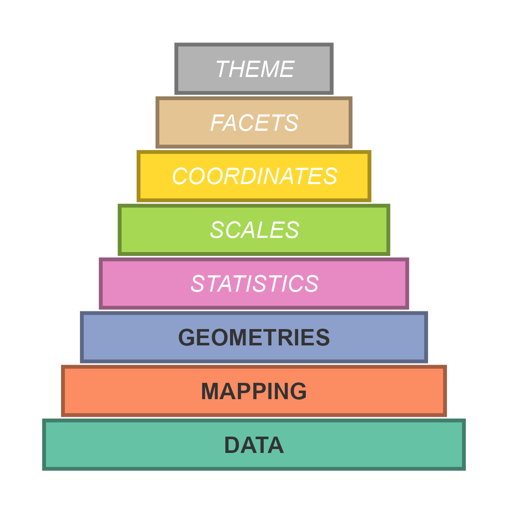
Abbildung 6.1 fasst das Fundament der Grammatik in ggplot2 zusammen. Die wichtigsten Layers sind dabei die drei untersten:
-
Data: Legt den Datensatz fest, der für die Visualisierung verwendet wird (
data = ...). -
Mapping: Bestimmt, wie die Daten in ästhetische Charakteristiken übersetzt werden. Hier werden etwa x- und y-Achse definiert, aber wenn gewünscht auch Farbe, Größe, etc. (
mapping = aes(...)). -
Geometries: Definieren die geometrischen Objekte (z. B. Punkte, Linien, Balken), mit denen die Daten dargestellt werden (
geom_*(...)).
Abhängig von der gewünschten Visualisierung kann man folgende Aspekte über die weiteren Layers definieren:
-
Statistics: Führen statistische Transformationen durch, z. B. das Berechnen von Mittelwerten oder Dichten, bevor die Daten geplottet werden (
stat_*()). Oft werden die zugrundeliegenden Transformationen aber bereits indirekt im Geometries-Element durchgeführt. -
Scales: Steuern, wie Datenwerte visuell umgesetzt werden, etwa durch Achsenskalierung, Farben oder Legenden (
scale_*()). -
Coordinates: Bestimmen das Koordinatensystem des Plots, z. B. kartesisch oder polar (
coord_*()). -
Facets: Teilen den Datensatz in Teilmengen auf und erstellen für jede davon einen eigenen Plot innerhalb einer Grafik (
facet_*()). -
Theme: Kontrolliert das Aussehen der Grafik, etwa Schriftarten, Hintergrund, Gitterlinien und Layout (
theme()).
Die Grammatik von ggplot folgt dabei folgendem Aufbau:
ggplot(
data = <DATA>, # Data-Layer
mapping = aes(<MAPPINGS>) # Mapping-Layer für alle Geom-Elemente
) +
<GEOM_FUNCTION>( # Geom-Layer
mapping = aes(<MAPPINGS>), # Mapping-Layer für spezifisches Geom-Element
stat = <STAT>, # auch separat im Stat-Layer möglich
position = <POSITION>
) +
<SCALES_FUNCTION> + # Scales-Layer
<COORDINATE_FUNCTION> + # Coord-Layer
<FACET_FUNCTION> + # Facet-Layer
<THEME_FUNCTION> # Theme-LayerIn den folgenden Abschnitten werden wir die einzelnen Layer im Detail kennenlernen.
6.3 Data-Layer
Um eine ggplot-Grafik (Plot) zu erstellen, verwenden wir die Funktion ggplot(). Mit dem Argument data = ... spezifizieren wir den Datensatz, den wir verwenden:
ggplot(data = penguins)Da ggplot() nur durch die Nennung des Datensatzes nicht weiß, welche Variablen aus dem penguins-Dataset wie visualisiert werden, ist Abbildung 6.2 ein leerer Plot.
6.4 Mapping-Layer
Ebenfalls innerhalb von ggplot() geben wir über das Argument mapping = aes(...) an, wie die Daten in ästhetische Charakteristiken übersetzt werden. Vor allem können wir hier festlegen, welche Daten auf die x- oder y-Achse gemappt werden. Wollen wir uns etwa den Zusammenhang von Schnabellänge (bill_len) und Flügellänge (flipper_len) ansehen:
Sollten andere ästhetische Merkmale ebenfalls von einer bestimmten Variable abhängen, können wir dies ebenfalls in aes() spezifizieren. Diese werden dann vor allem auf den im nächsten Punkt behandelten Geometries-Layer (Geom) übertragen. Wesentliche Optionen sind hierbei:
-
Farbe: Wollen wir etwa die abgebildeten Daten in Abhängigkeit einer Variable einfärben, verwenden wir die Argumente
color = ...(für Punkte/Linien) und/oderfill = ...(für Flächen). -
Größe: Um die Größe des Geoms (etwa eines Punkts in einem Scatterplot) relativ zu einer bestimmten Variable zu machen, verwenden wir
size = .... -
Form: Die Form des Geoms kann über das Argument
shape = ...(für Punkte) oderlinetype = ...(für Linien) relativ zu einer bestimmten Variable dargestellt werden. -
Gruppierung: Bestimmte Geoms können mittels
group = ...in Abhängigkeit einer Variable separat dargestellt werden, ohne die Geoms gesondert einzufärben oder mit einer anderen Form zu versehen. So können wir etwa Zeitreihen von Wirtschaftskennzahlen für unterschiedliche Länder mit separaten Trendlinien abbilden.
Möchten wir also den Zusammenhang von Schnabel- und Flügellänge von Penguinen so darstellen, dass die Geoms in Abhängigkeit der Spezies (species) des Pinguins eine andere Farbe haben:
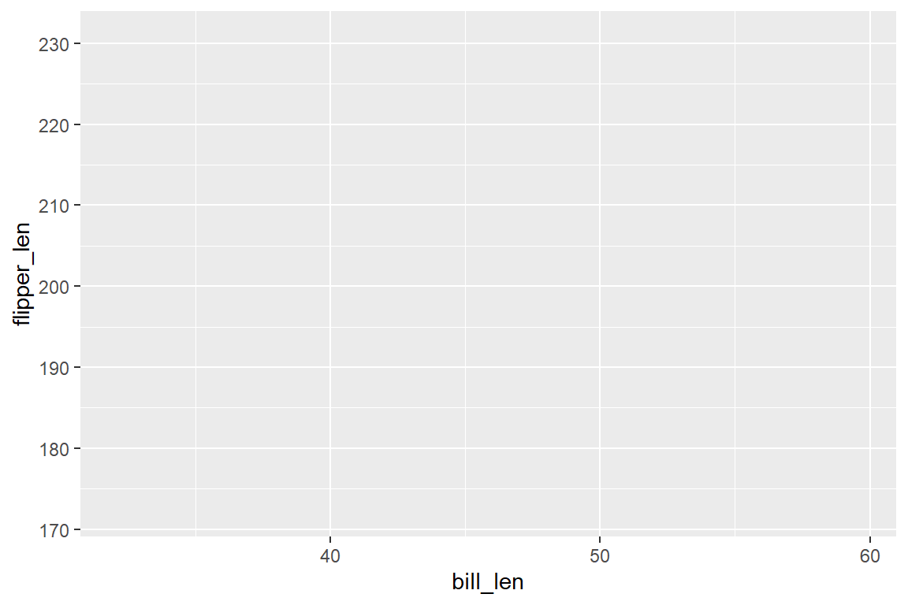
Da wir noch nicht spezifiziert haben, wie wir die Beobachtungen darstellen wollen, ändern sich hier nur die jeweiligen Achsen des Plots.
Hinweis
aes() und Variablentypen
Bei der Verwendung von weiteren Ästhetik-Argumenten innerhalb von aes() müssen wir beachten, dass der Variablentyp zur Ästhetik passt. Für Form und Gruppierung sollten nur kategoriale Variablen verwendet werden. Machen wir die Größe von einer Variable abhängig, eigenen sich nur metrische Variablen dafür, da kategoriale Variablen hier eine Ordnung unterstellen. Die Farbe wiederum kann relativ zu kategorialen und metrischen Variablen gesetzt werden. Bei kategorialen Variablen wählt ggplot eine diskrete Farbpalette, während bei metrischen Variablen ein Farbverlauf verwendet wird.
6.5 Geometries-Layer
Über den Geometries-Layer spezifizieren wir schlussendlich, wie wir unsere Beobachtungen darstellen möchten. Dafür stehen uns in ggplot unterschiedliche Geoms zur Verfügung. Die wesentlichsten Optionen sind:
-
geom_point()wird für Streudiagramme verwendet und eignet sich besonders, um Zusammenhänge zwischen zwei metrischen Variablen sichtbar zu machen. -
geom_line()verbindet Datenpunkte zu Liniendiagrammen und wird häufig für Zeitreihen oder geordnete Daten genutzt.geom_smooth()erstellt geglättete Trendlinien, etwa über Regressions- oder LOESS-Schätzungen. -
geom_bar()undgeom_colerstellen Balkendiagramme. - Verteilungen können außerdem als Histrogramme (
geom_histogram()), Verteilungskurven (geom_density()), Boxplots (geom_boxplot()) dargestellt werden.
Im Gegensatz zum Data- und Mapping-Layer definieren wir das Geom nicht mehr innerhalb von ggplot(), sondern als neue Funktion in Verbindung mit ggplot(). Die Verbindung folgt über das +-Zeichen (ggplot(...) + geom_*(...)).
6.5.1 Streudiagramme: geom_point()
Streudiagramme werden verwendet, um den Zusammenhang zwischen zwei metrischen Variablen sichtbar zu machen. Sie eignen sich besonders gut, um Muster, Korrelationen oder Ausreißer in den Daten zu erkennen.
Möchten wir den Zusammenhang von Schnabel- und Flügellänge als Streudiagramm darstellen, und dabei die einzelnen Punkte abhängig der Pinguin-Spezies einfärben, so kombinieren wir unseren ggplot()-Befehl aus Kapitel 6.4 mit geom_point():
ggplot(
data = penguins,
mapping = aes(x = bill_len, y = flipper_len, color = species)
) +
geom_point()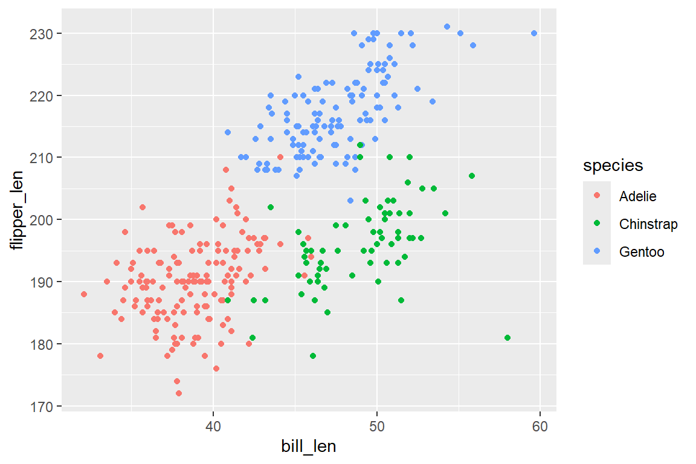
Wir haben nun unsere erste aussagekräftige Grafik dargestellt. Abbildung 6.4 zeigt einen positiven Zusammenhang von Schnabel- und Flügellänge bei Pinguinen, wobei deutliche Unterschiede zwischen den Spezien bestehen.
WarnungÄsthetische Argumente inner- und außerhalb von
aes()
Die Einfärbung der Punkte haben wir im Streudiagramm nach Geschlecht vorgenommen. Möchten wir die Punkte einfach nur z.B. blau einfärben, können wir dies ebenfalls über das Argument color = ... definieren. Diese definieren wir dann aber nicht innerhalb von aes(), da dies zum folgendem Problem in Abbildung 6.5 (a) führt. Da ggplot alles innerhalb von aes() als eine Abbildung von Daten auf Ästhetiken interpretiert, liest die Funktion unseren Code als Kategorie mit dem Namen „blue“. Dadurch wird automatisch eine Standard-Farbpalette verwendet, und die Punkte werden (je nach Palette) z. B. rot eingefärbt. Korrekt spezifizieren wir die Farboption stattdessen außerhalb von aes() und innerhalb des Geoms (Abbildung 6.5 (b)):
# Links (falsch)
ggplot(
data = penguins,
mapping = aes(x = bill_len, y = flipper_len, color = "blue")
) +
geom_point()
# Rechts (richtig)
ggplot(
data = penguins,
mapping = aes(x = bill_len, y = flipper_len)
) +
geom_point(color = "blue")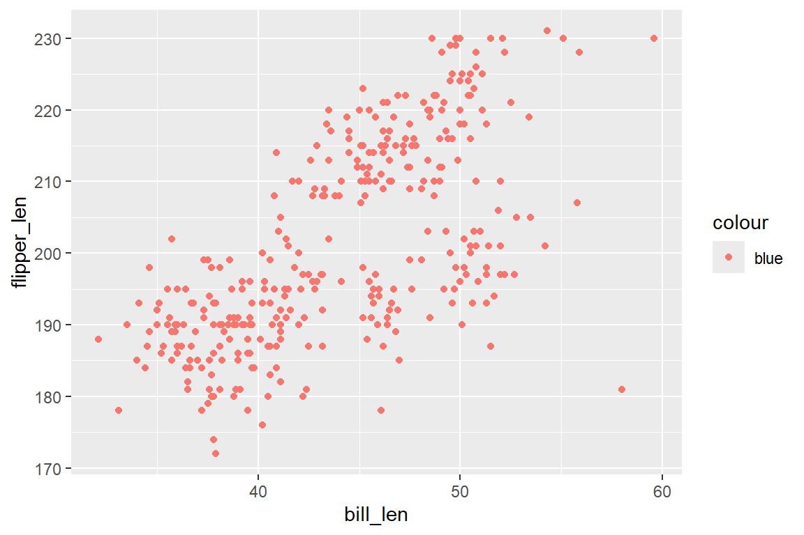
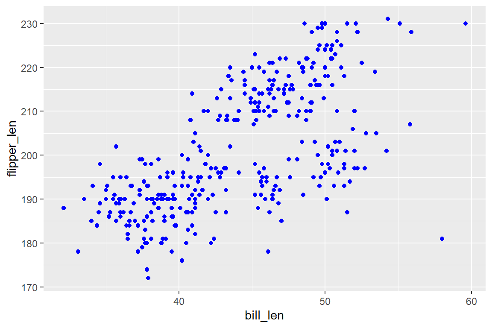
6.5.2 Liniendiagramme und Trends: geom_line(), geom_smooth()
Liniendiagramme werden verwendet, um Verläufe und Entwicklungen über eine geordnete Dimension hinweg darzustellen, beispielsweise über Zeit. Sie eignen sich besonders gut, um Trends und Veränderungen in metrischen Variablen sichtbar zu machen und mehrere Beobachtungen miteinander zu verbinden.
Um das durchschnittliche Körpergewicht (body_mass) im Zeitverlauf year darzustellen, abhängig von der Spezies der Pinguine, müssen wir zuerst die Durchschnitte berechnen, da ansonsten geom_line() alle Beobachtungspunkte im Datensatz verbindet (siehe Problem in Abbildung 6.6 (a)).
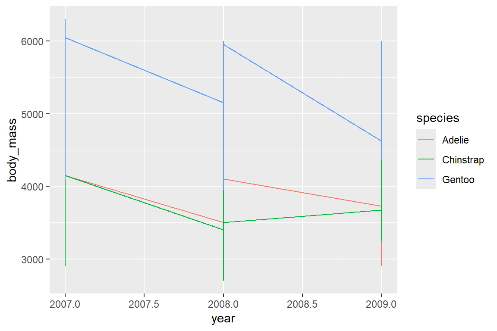
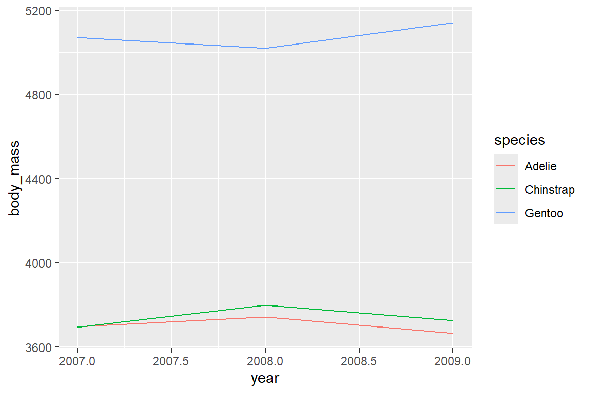
Alternativ können wir die Daten über den Statistics-Layer auch innerhalb von ggplot() zusammenfassen. Dies lernen wir in Kapitel 6.6 näher kennen. Auch sind die Labels der x-Achse nicht ideal, da hier eigentlich nur die Zeitpunkte mit Beobachtungen (ganze Jahre) angeführt werden sollten. Dies können wir im Scales-Layer anpassen (siehe Kapitel 6.7).
Um Trendlinien durch Beobachtungspunkte zulegen, verwenden wir geom_smooth(). Da diese Funktion die Daten bereits selbst transformiert, müssen wir diese hier nicht vorher aufbereiten. Zusätzlich zur Trendlinie wird per Default auch ein Konfidenzintervall angezeigt. In den Optionen von geom_smooth() können wir diese mit se = FALSE ausblenden. Außerdem mit `method = ... können wir aus diversen Methoden zur Trendberechnung (Smoothing) auswählen (siehe Help-Dokumentation der Funktion für mehr Informationen).
Möchten wir etwa die Trends auf Basis eines OLS-Modells berechnen und Konfidenzintervalle inkludieren:
ggplot(
data = penguins,
mapping = aes(x=year, y = body_mass, color = species)
) +
geom_smooth(method = lm, se = TRUE)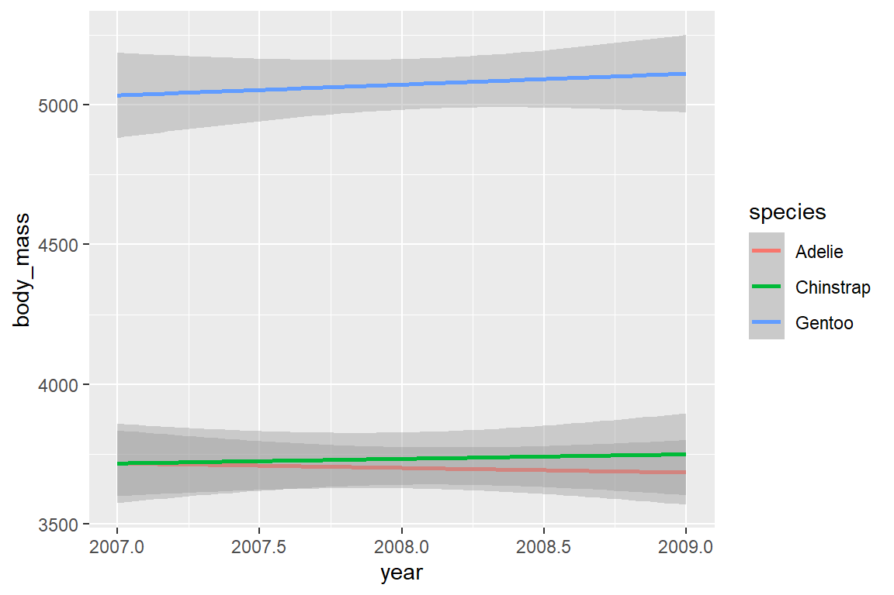
6.5.3 Balkendiagramme: geom_bar(), geom_col()
Balkendiagramme werden verwendet, um kategoriale Daten zu vergleichen, indem Häufigkeiten oder aggregierte Werte für verschiedene Gruppen dargestellt werden. Sie eignen sich besonders, um Unterschiede zwischen Kategorien übersichtlich sichtbar zu machen.
Um auf Basis unserer Individualdaten die Anzahl der Pinguine pro Spezies in einem Balkendiagramm darzustellen, verwenden wir geom_bar(). Um die Balken horizontal auszurichten, müssen wir im Mapping-Layer die Spezies als Variable für die y-Achse anstelle der x-Achse definieren (y = species anstatt x = species).

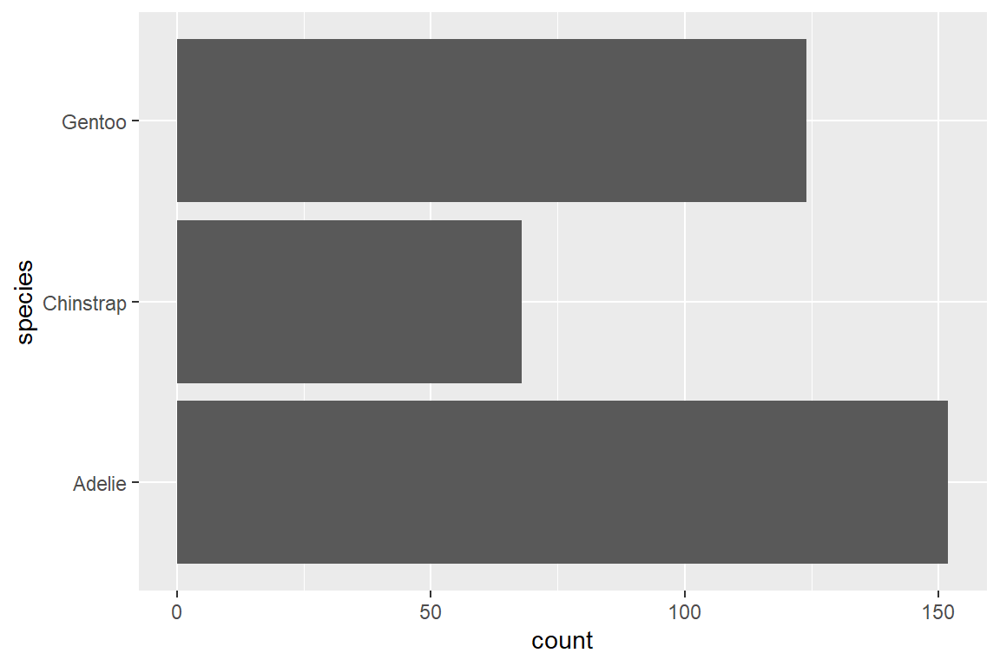
Manchmal sind unsere zugrunde liegenden Daten bereits aggregiert. Um Balkendiagramme auf Basis von aggregierten Daten zu erstellen, verwenden wir geom_col():
Tipp
position-Argument in Balkendiagrammen
In einem Balkendiagramm können wir die Balken weiter unterteilen, um mehr Informationen abzubilden. So können wir etwa die Anzahl der Pinguine pro Spezies zusätzlich nach Geschlecht unterteilen, indem wir über das fill = ... Argument in aes() die Balken nach Geschlecht einfärben.
Das Argument position = ... in geom_bar() bestimmt, wie Balken bei gruppierten Daten angeordnet werden, etwa gestapelt (stack, Default), nebeneinander (dodge) oder normiert um prozentuale Anteile darzustellen (fill):
# Links
ggplot(
data = penguins,
mapping = aes(x = species, fill = sex)
) +
geom_bar(position = "stack")
# Mitte
ggplot(
data = penguins,
mapping = aes(x = species, fill = sex)
) +
geom_bar(position = "dodge")
# Rechts
ggplot(
data = penguins,
mapping = aes(x = species, fill = sex)
) +
geom_bar(position = "fill")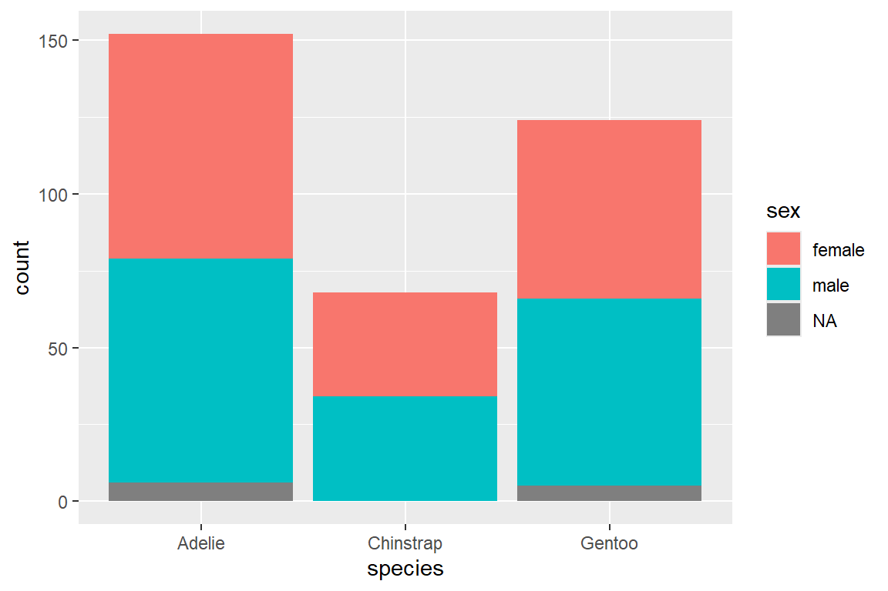

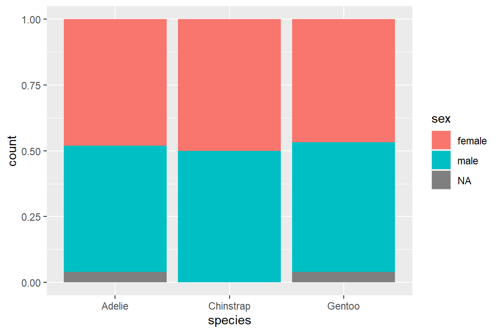
6.5.4 Verteilungen: geom_histogram(), geom_density(), geom_boxplot()
Während Balkendiagramme sich gut dazu eigenen, um die Verteilung einer kategorialen Variable darzustellen, bietet ggplot eine Vielzahl an weiteren Geoms zur Visualierung der Verteilung metrischer Variablen, etwa Histogramme, Density-Plots oder Boxplots.
Möchten wir die Verteilung der Flügellänge im penguins-Datensatz als Histogramm darstellen, verwenden wir geom_histogram(). Die Intervallgröße (Bin-Größe) wird von geom_histogram() automatisch gewählt (Abbildung 6.10 (a)). Diese kann jedoch über Argumente spezifisch gesetzt werden. Über bins = ... können wir eine bestimmte Anzahl an Bins festsetzen (Abbildung 6.10 (b)), während über binwidth = ... die Größe spezifiziert wird (Abbildung 6.10 (c)):
# Links
ggplot(
data = penguins,
mapping = aes(x = flipper_len)
) +
geom_histogram()
# Mitte
ggplot(
data = penguins,
mapping = aes(x = flipper_len)
) +
geom_histogram(bins = 10)
# Rechts
ggplot(
data = penguins,
mapping = aes(x = flipper_len)
) +
geom_histogram(binwidth = 1)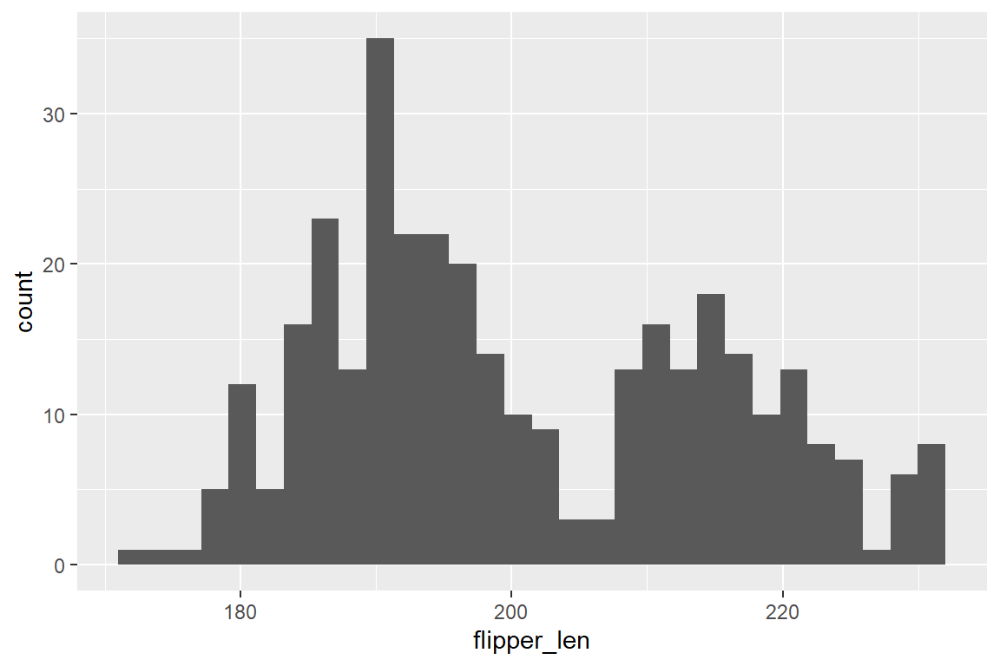
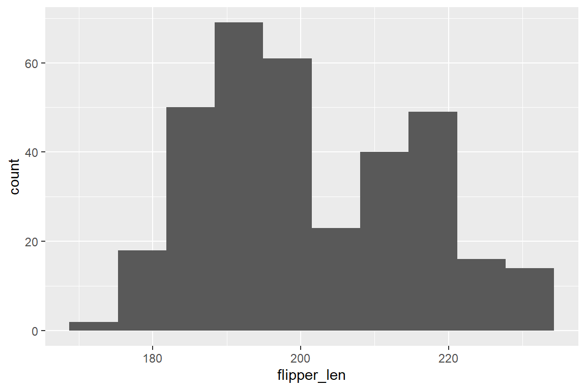
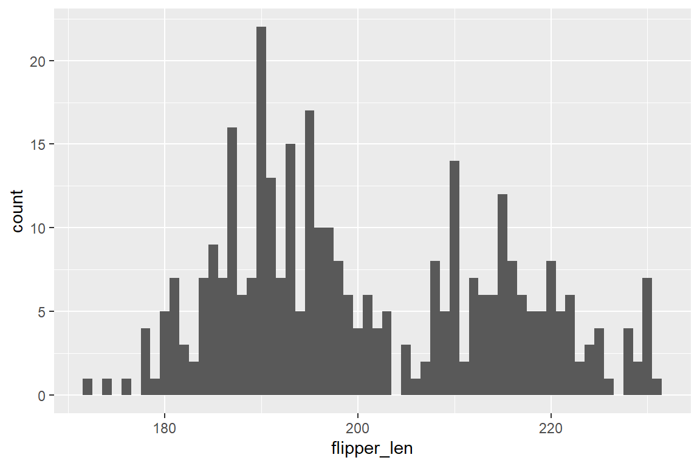
Um Verteilungen zu glätten beziehungsweise keine willkürlichen Entscheidungen bei der Bin-Größe treffen zu müssen, können wir mit geom_density() Verteilungskurven darstellen. Dieses Geom eignet sich außerdem dazu, Verteilungsunterschiede zwischen Gruppen darzustellen (etwa Flügellänge nach Spezies):
# Links
ggplot(
data = penguins,
mapping = aes(x = flipper_len)
) +
geom_density() +
xlim(160, 240)
# Rechts
ggplot(
data = penguins,
mapping = aes(x = flipper_len, color = species, fill = species)
) +
geom_density(alpha = 0.2) +
xlim(160, 240)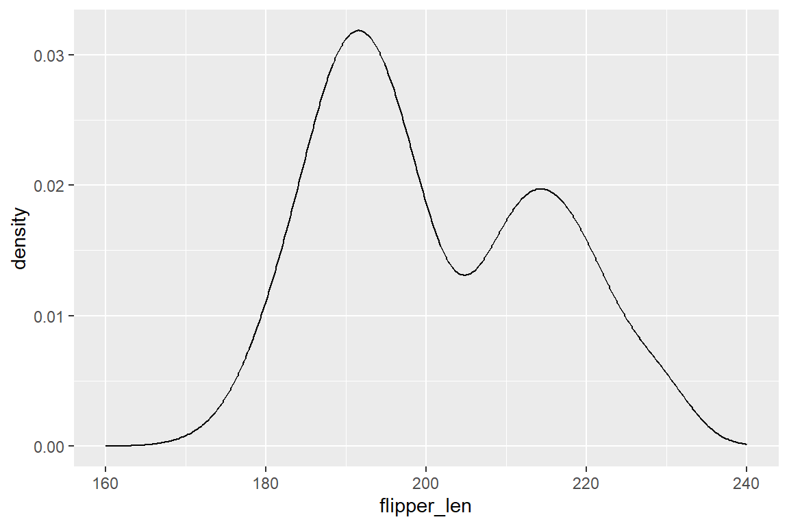
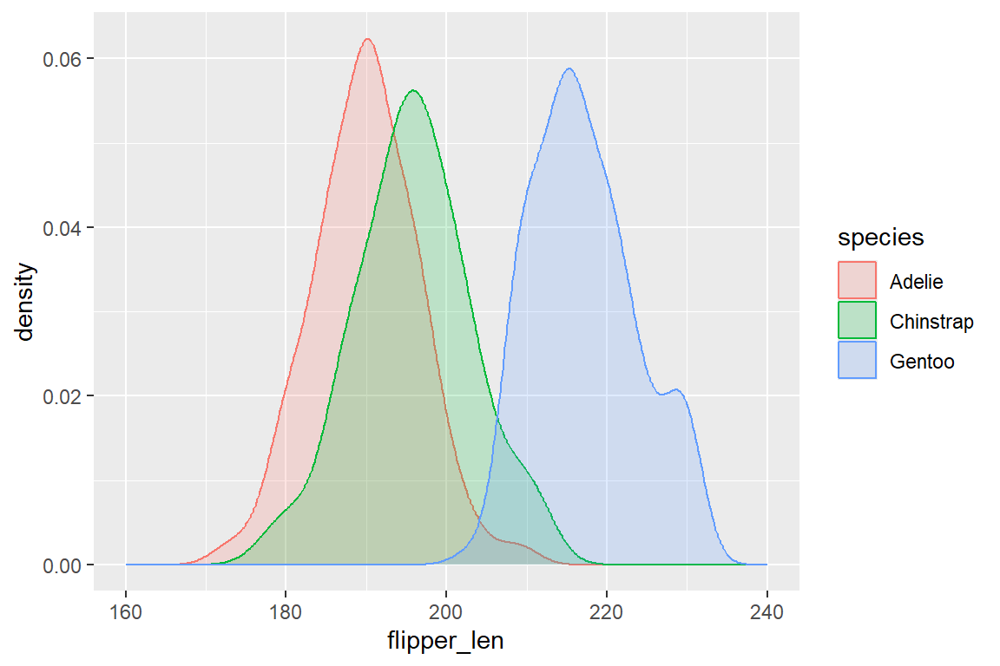
Damit bei den Verteilungen nach Spezies die einzelnen Kurven gut sichtbar sind, erhöhen wir die Transparenz der Füllfarbe mit dem Argument alpha = .... Dieses Argument akzepiert Werte zwischen 0 (volle Transparenz) und 1 (keine Transparenz). Um die Density-Kurven über die ganze Verteilung anzuzeigen, setzen wir außerdem mit xlim() die Begrenzungen der x-Achse manuell. Dies greift bereits vor auf das Scales-Layer (siehe Kapitel 6.7).
Ausreißer lassen sich wiederum mit Boxplots gut visualisieren. Ein Boxplot zeigt gleichzeitig Median und den Interquartilsabstand zwischen 1. und 3. Quartil (Box). Die Antennen (Whiskers) sind maximal beschränkt auf das 1.5-fache des IQRs, während Ausreißer als einzelne Punkte dargestellte werden (für weitere Details, siehe den Wikipedia-Artikel zu Boxplots). In ggplot werden Boxplots mit geom_box() erstellt:
ggplot(
data = penguins,
mapping = aes(y = flipper_len, x = species, color = species)
) +
geom_boxplot()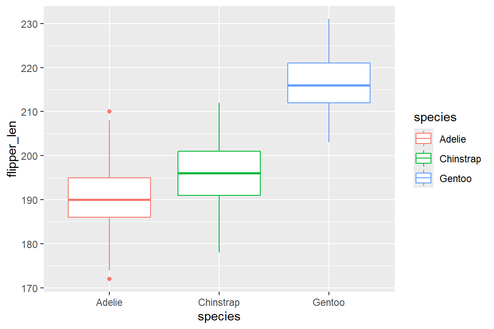
6.5.5 Kombination mehrerer Geoms
Um unterschiedliche Aspekte von Daten in einem Plot darzustellen, können wir mehrere Geoms miteinander kombinieren. Wollen wir etwa in unser Streudiagramm zum Zusammenhang von Flügel- und Schnabellänge nach Spezies zusätzlich noch eine OLS-Regressionsgerade hinzufügen, können wir geom_point() und geom_smooth() kombinieren:
ggplot(
data = penguins,
mapping = aes(x = bill_len, y = flipper_len, color = species)
) +
geom_point(alpha = .5)+
geom_smooth(method = "lm", alpha = .2)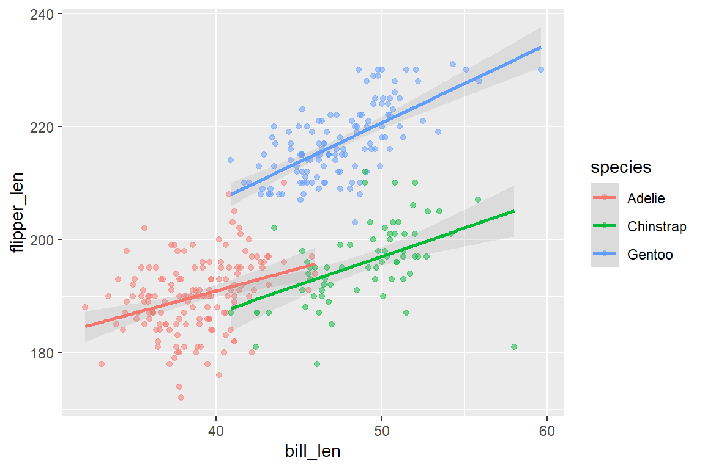
TippUnterschiedliches Ästhetik-Mapping pro Geom
Oft wollen wir nur auf ein spezifisches Geom ein Ästhetik-Mapping anwenden. Um dies zu erreichen, definieren wir dieses Argument nicht in der aes()-Funktion innerhalb von ggplot(), sondern als Argument in aes() innerhalb des gewünschten Geoms.
Möchten wir etwa die Form der einzelnen Punkte im Streudiagramm abhängig vom Geschlecht machen, jedoch nicht die Regressionsgeraden:
ggplot(
data = penguins,
mapping = aes(x = bill_len, y = flipper_len, color = species)
) +
geom_point(aes(shape = sex), alpha = .5)+
geom_smooth(method = "lm", alpha = .2)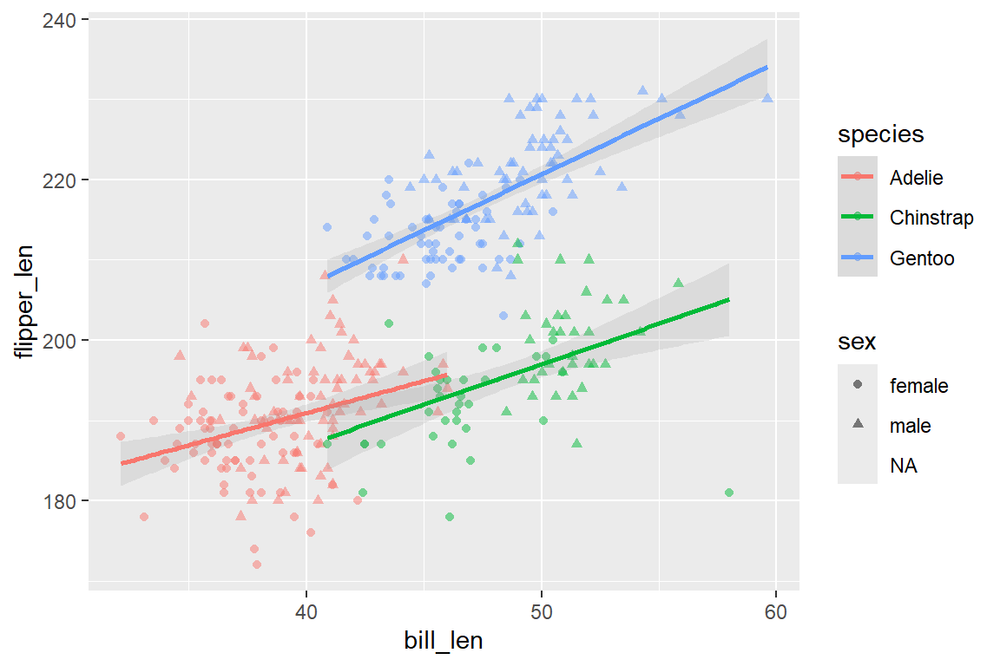
6.6 Statistics-Layer
Der Statistics-Layer dient dazu, Daten vor der grafischen Darstellung statistisch zu transformieren. stat_*-Funktionen berechnen zusätzliche Informationen wie Häufigkeiten, Dichten, Regressionslinien oder Zusammenfassungen, die anschließend visualisiert werden. Dadurch lassen sich komplexe Muster und Strukturen in den Daten effizient und automatisch darstellen, ohne dass die Berechnungen separat durchgeführt werden müssen. ggplot inkludiert mehr als 20 unterschiedliche Statistik-Funktionen.
Vielfach geschieht dies bereits im Hintergrund im Geom-Layer, da gewisse statistische Transformationen Default-Optionen einer geom_*()-Funktion sind. So ist etwa stat_count() die Default-Option in geom_bar(). Mit unseren Skills aus Kapitel 3 können wir außerdem Daten oft einfach vor einem ggplot()-Befehl selbst transformieren. Aus diesem Grund wird der Statistics-Layer in dieser R-Einführung nicht im Detail behandelt.
Um ein Beispiel für eine stat_*-Funktion zu geben, replizieren wir das Liniendiagramm aus Kapitel 6.5 mit stat_summary(). Dabei definieren wir über die Argumente fun = ... die Transformationsfunktion sowie über geom = ... die Art der Visualisierung:
ggplot(penguins, aes(x = year, y = body_mass, color = species)) +
stat_summary(fun = mean, geom = "line")
6.7 Scales-Layer
Der Scales-Layer steuert, wie Datenwerte in visuelle Eigenschaften übersetzt werden. Dazu gehören die Achsenskalierung (z.B. Limits, Breaks, Labels), aber auch die visuelle Umsetzung von Farbe, Größe, Form und anderen Ästhetiken. Kurz gesagt: Was im Mapping- und Geom-Layer festgelegt wird (aes(...)), wird im Scales-Layer präzisiert und angepasst.
Die scale_*-Funktionen folgen einem einheitlichen Namensschema: scale_<ästhetik>_<typ>(). Dabei steht <ästhetik> für die zu steuernde Ästhetik (z.B. x, y, color, fill, size, shape) und <typ> für den Datentyp bzw. die Art der Skala, etwa:
-
continuous: für metrische (kontinuierliche) Variablen -
discrete: für kategoriale Variablen -
date,time,datetime: für Datum- und Zeitangaben -
manual: für manuell definierte Werte -
log10,sqrt,reverse: für transformierte Achsen
In diesem Abschnitt werden wir die wichtigsten Optionen im Scales-Layer für kontinuierliche und kategoriale Variablen kennenlernen. Für Informationen zu anderen Datentypen und Ästhetiken siehe Kapitel 10-12 in ggplot2: Elegant Graphics for Data Analysis.
6.7.1 Achsen
Um die Achsen einer Abbildung zu bearbeiten, verwenden wir die Funktionen scale_x_*() bzw. scale_y_*(). Die wichtigsten Argumente sind dabei:
-
name = ...: Beschriftung der Achse (alternativ überlabs(), siehe Kapitel 6.10). -
breaks = c(...): Definiert, wo Hauptmarkierungen inkl. Beschriftungen gesetzt werden. -
minor_breaks = ...: Definiert, wo Zwischenmarkierungen (ohne Beschriftungen) gesetzt werden. -
labels = ...: Überschreibt die automatischen Achsenlabels. -
limits = ...: Setzt die Achsenlimits (Werte außerhalb werden alsNAbehandelt). -
expand = ...: Steuert den Abstand zwischen Daten und Achsenrand. -
position = ...: Definiert, wo Achsen eingezeichnet werden (oben/unten für x-Achse, links/rechts für y-Achse)
WarnungEntfernte Beobachtungen mit
limits = ...
Durch das limits-Argument entfernt ggplot alle Datenpunkte außerhalb der Limits. Das kann statistische Geoms wie geom_smooth() beeinflussen. Soll nur die Darstellung zugeschnitten werden, ohne Daten zu entfernen, ist coord_cartesian(xlim = ..., ylim = ...) die bessere Wahl (siehe Kapitel 6.8).
Mit scale_x_continous() und scale_y_continuous() können wir die Achsen in unserem Streudiagramm von Schnabel- und Flügellänge eingefärbt nach Spezies adaptieren:
# Links (original)
ggplot(
data = penguins,
mapping = aes(x = bill_len, y = flipper_len, color = species)
) +
geom_point()
# Rechts (adaptiert)
ggplot(
data = penguins,
mapping = aes(x = bill_len, y = flipper_len, color = species)
) +
geom_point() +
scale_x_continuous(
name = "Schnabellänge (mm)",
limits = c(35, 65),
breaks = c(35, 45, 55, 65),
position = "top"
) +
scale_y_continuous(
name = "Flügellänge (mm)",
minor_breaks = NULL
)
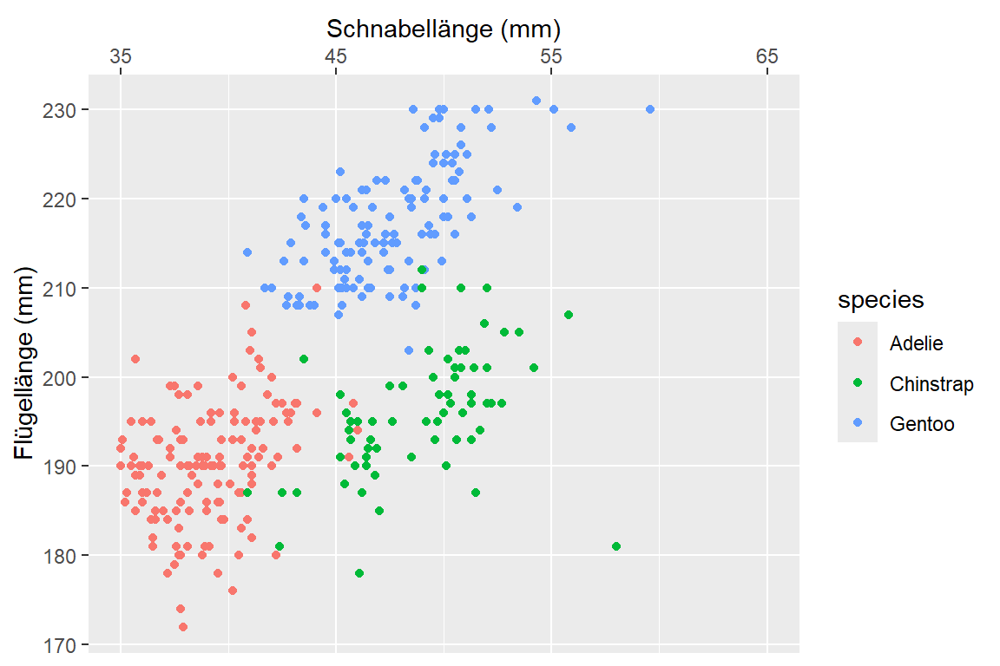
Dabei haben wir in Abbildung 6.15 (b) folgende Änderungen vorgenommen:
- Neue Achsenbeschriftungen:
name = "Schnabellänge (mm)"(x-Achse) undname = "Flügellänge (mm)"(y-Achse) - Limits der x-Achse auf den Bereich von 35 bis 65mm gesetzt:
limits = c(35, 65) - Hauptmarkierungen der x-Achse neu definiert:
breaks = c(35, 45, 55, 65) - x-Achse auf Oberseite der Grafik verschoben:
position = "top" - Zwischenmarkierungen auf y-Achse entfernt:
minor_breaks = NULL
Mit scale_x_discrete() können wir die kategoriale (diskrete) x-Achse in unserem Säulendiagramm der Anzahl der Pinguine pro Spezies adaptieren. Da in diesem Plot die y-Achse metrisch ist (Anzahl der Pinguine), verwenden wir hierfür wieder scale_y_continous():
# Links (original)
ggplot(
data = penguins,
mapping = aes(x = species)
) +
geom_bar()
# Rechts (adaptiert)
ggplot(
data = penguins,
mapping = aes(x = species)
) +
geom_bar() +
scale_x_discrete(
name = "Pinguin-Spezies",
labels = c("A", "C", "G")
) +
scale_y_continuous(
name = NULL,
expand = expansion(add = c(0, 20))
)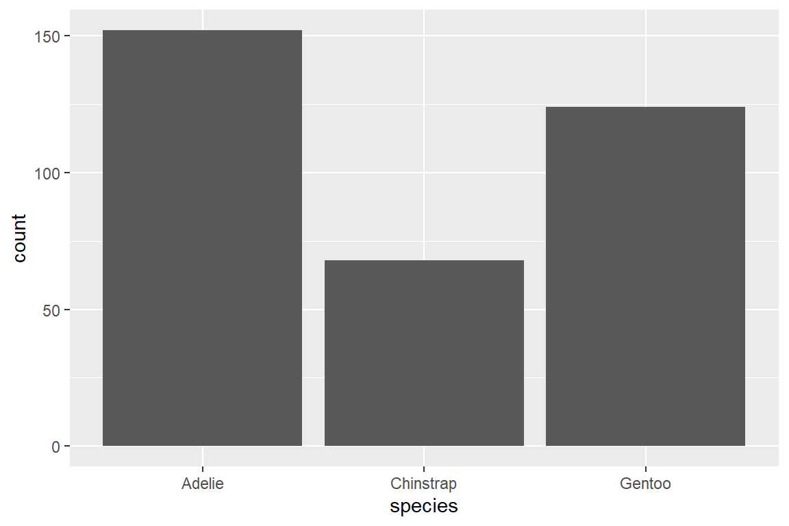
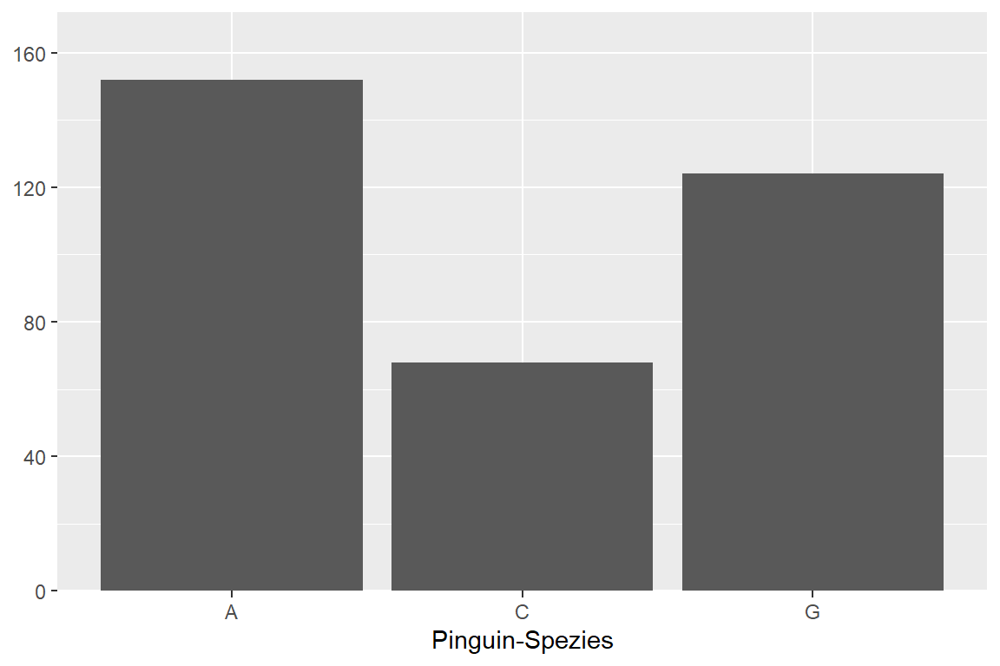
Dabei haben wir in Abbildung 6.16 (b) folgende Änderungen vorgenommen:
- Neue Achsenbeschriftung der x-Achse:
name = "Pinguin-Spezies" - Neue Achsenlabels der x-Achse:
labels = c("A", "C", "G") - Keine Achsenbeschriftung der y-Achse:
name = NULL - Abstand der Daten zur y-Achse neu definiert (0 um unteren Ende, +20 am oberen Ende):
expand = expansion(add = c(0, 20))
6.7.2 Farben
Um die Farb- und Füllskalen einer Abbildung zu bearbeiten, verwenden wir die Funktionen scale_color_*() bzw. scale_fill_*(). Die wichtigsten Argumente sind dabei:
-
palette = ...: Definiert die Farb- und Füllskala. Akzeptiert werden Vektoren aus Farben (entweder als Hex-Code oder als R-Farbe) oder eine String-Variable einer Farbpalette. Für Informationen zu Farbnamen in R siehe hier odercolors(). Farbpaletten können in R über Packages installiert werden. In ggplot kann ohne Installation weitere Packages auf die Paletten von RColorBrewer und viridis.- Kontinuierliche Farb-/Füllskala: Bei einem Farbvektor müssen wir zwei oder mehr Farben angeben, auf Basis deren Reihenfolge ggplot eine Farbskala erstellt.
- Diskrete Farb-/Füllskala: Bei Angabe eines Farbvektors muss dieser die gleiche Länge haben wie die zugrundeliegende kategoriale Variable Ausprägungen hat (ohne fehlende Werte).
-
name = ...: Titel der Farb-/Füllskala in Legende. -
breaks = c(...): Definiert, welche Breaks in der Legende zur Farbskala gesetzt werden (nur bei kontinuierlichen Skalen). -
labels = ...: Überschreibt die automatische Labels in Legende. Bei kontinuierliche Farbskala muss dieser Vektor mitbreaks = ...korrespondieren. Bei einer diskreten Farbskala muss dieser Vektor die gleiche Länge haben wie die zugrundeliegende kategoriale Variable Ausprägungen hat (mit oder ohne Label fürNA). -
navalue = ...: Optionale Farbeinstellung für fehlende Werte.
Mit scale_color_continous() können wir die Farbskala einer kontinuierlichen Variable adaptieren. Bei einem Streudiagramm von Schnabel- und Flügellänge, eingefärbt nach Körpergewicht der Pinguine (metrisch) etwa:
# Links (original)
ggplot(
data = penguins,
aes(x = bill_len, y = flipper_len, color = body_mass)
) +
geom_point()
# Mitte (Adaptiert, V1)
ggplot(
data = penguins,
aes(x = bill_len, y = flipper_len, color = body_mass)
) +
geom_point() +
scale_color_continuous(
name = "Gewicht",
palette = c("#FFD138", "red3")
)
# Rechts (Adaptiert, V2)
ggplot(
data = penguins,
aes(x = bill_len, y = flipper_len, color = body_mass)
) +
geom_point() +
scale_color_continuous(
breaks = c(3000, 4500, 6000),
labels = c("3kg", "4,5kg", "6kg"),
palette = "viridis"
)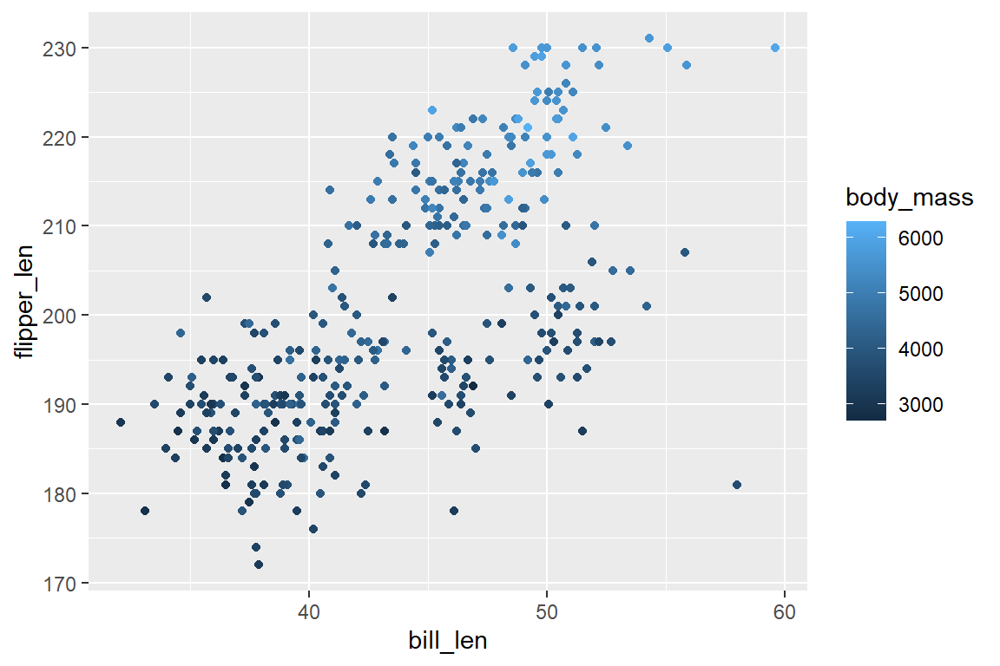
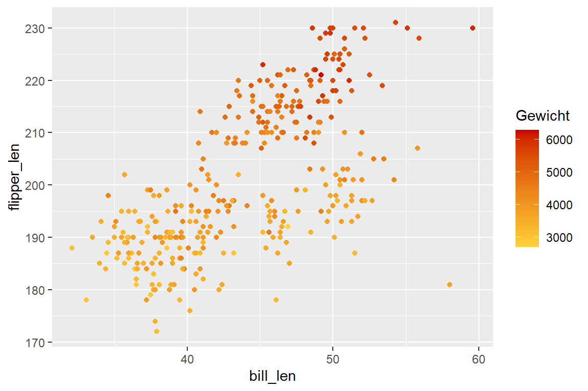
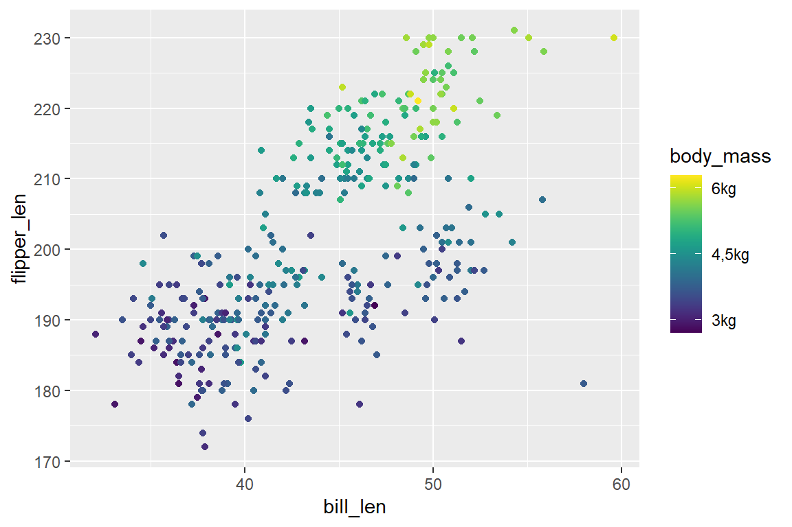
In Abbildung 6.17 (b) haben wir folgende Aspekte verändert:
- Name der Farbskala in Legende:
name = "Gewicht" - Farbskala mit Farbverlauf von Gelb zu Rot:
palette = c("#FFD138", "red3"). Dabei haben wir für das untere Ende der Farbskala einen Hex-Code angegeben, für das obere Ende eine R-Farbnamen.
In Abbildung 6.17 (c) haben wir wiederum folgende Aspekte adaptiert:
- Breaks in Farbskala-Legende manuell gesetzt:
breaks = c(3000, 4500, 6000) - Zugehörige Labels selbst definiert:
labels = c("3kg", "4,5kg", "6kg") - Farbskala auf Basis einer vordefinierten Palette:
palette = "viridis"
Mit scale_fill_discrete() können wir wiederum die Füllskala einer diskreten Variable verändern. Beim Säulendiagramm der Pinguinarten unterteilt nach Geschlecht etwa:
# Links (original)
ggplot(
data = penguins,
mapping = aes(x = species, fill = sex)
) +
geom_bar(position = "dodge")
# Mitte (Adaptiert, V1)
ggplot(
data = penguins,
mapping = aes(x = species, fill = sex)
) +
geom_bar(position = "dodge") +
scale_fill_discrete(
name = NULL,
palette = c("cadetblue", "orange"),
na.value = "#000"
)
# Links (Adaptiert, V2)
ggplot(
data = penguins,
mapping = aes(x = species, fill = sex)
) +
geom_bar(position = "dodge") +
scale_fill_discrete(
labels = c("weiblich", "männlich", "-"),
palette = "Dark2"
)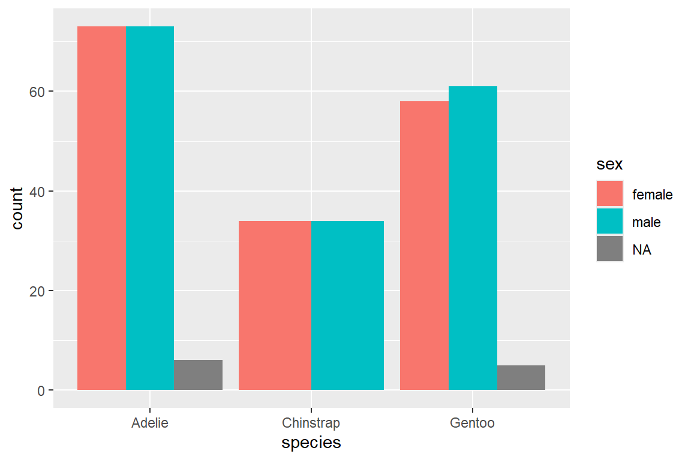
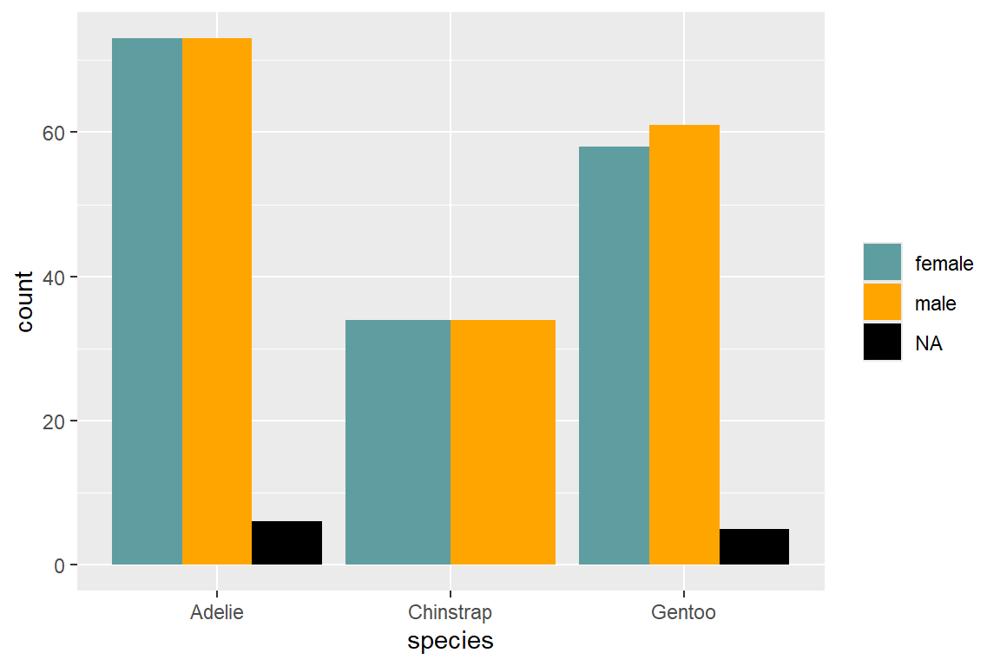
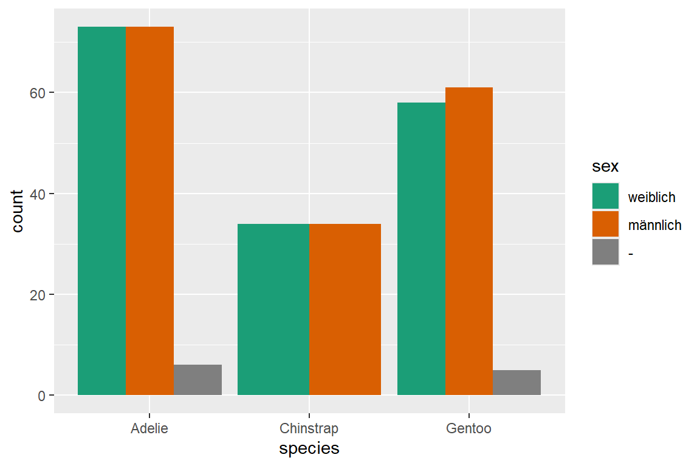
In Abbildung 6.18 (b) haben wir folgende Aspekte verändert:
- Kein Legendenname:
name = NULL - Füllskala mit zwei Farben für Geschlechtausprägung (ohne
NA):palette = c("cadetblue", "orange") - Füllfarbe für
NAdefiniert:na.value = "#000"
In Abbildung 6.18 (c) haben wir wiederum folgende Aspekte adaptiert:
- Labels für Geschlechtausprägung und
NAdefiniert:labels = c("weiblich", "männlich", "-") - Füllpalette gewählt:
palette = "Dark2"
6.7.3 Weitere Skalenoptionen
Im Scales-Layer können wir auch weitere ästhetische Aspekte genauer spezifizieren, welche wir innerhalb von aes() relativ zu einer Variable gesetzt haben:
- Größe:
scale_size_*() - Transparenz:
scale_alpha_*() - Linienbreite:
scale_linewidth_*() - Form:
scale_shape_*()
Siehe dazu die ggplot-Dokumentation, Help-Seiten zu den Befehlen in R oder ggplot2: Elegant Graphics for Data Analysis.
6.8 Coordinates-Layer
Der Coordinates-Layer bestimmt das Koordinatensystem, in dem die Grafik dargestellt wird. In den meisten Fällen ist das Standard-Koordinatensystem (kartesisch) ausreichend, und der Coordinates-Layer muss nicht explizit angegeben werden. Die wichtigsten Funktionen sind:
-
coord_cartesian(): Das Standard-Koordinatensystem. Im Unterschied zuxlim()/ylim()werden beicoord_cartesian(xlim = ..., ylim = ...)die Achsenlimits nur optisch zugeschnitten, ohne Datenpunkte zu entfernen. Das ist wichtig, wenn statistische Geoms wiegeom_smooth()auf den vollständigen Daten basieren sollen. -
coord_flip(): Tauscht x- und y-Achse. Oft einfacher als das Mapping-Argumenty = speciesin Balkendiagrammen umzuschreiben – insbesondere wenn ein bestehender Plot rotiert werden soll. -
coord_fixed(): Setzt ein festes Seitenverhältnis zwischen x- und y-Achse (Default: 1:1). Nützlich etwa bei geografischen Karten oder wenn beide Achsen dieselbe Einheit haben. -
coord_polar(): Wandelt kartesische in polare Koordinaten um – die Basis für Kreisdiagramme (Pie Charts) inggplot. -
coord_map(),coord_quickmap(),coord_sf(): Für Kartenprojektionen inggplot.
Für mehr Informationen, siehe Kapitel 15 in ggplot2: Elegant Graphics for Data Analysis.
HinweisZoomen in ggplot
Wie in Kapitel 6.7 angemerkt, werden durch das Setzen von Limits in ggplot die außerhalb der Limits liegenden Beobachtungen in NAs umgewandelt. Dies kann in manchen Fällen den resultierenden Plot beeinflussen, etwa wenn Trendlinien durch Beobachtungspunkte gelegt werden. Soll nur die Darstellung zugeschnitten werden, ohne Daten zu entfernen, ist coord_cartesian(xlim = ..., ylim = ...) die bessere Wahl. Abbildung 6.19 veranschaulicht dieses Problem.
Abbildung 6.19 (a) zeigt den Zusammenhang von Schnabel- und Flügellänge inklusive einer Trendlinie für den gesamten Datensatz. In Abbildung 6.19 (b) wird der Achsenausschnitt von 40 bis 50mm Schnabellänge mittels xlim() gewählt. Durch die Entfernung aller Datenpunkte außerhalb dieser Limits bei der Berechnung des Trends verändert sich der Trend in diesem Abschnitt. In Abbildung 6.19 (c) wiederum wird in den ursprünglichen Plot reingezoomt, ohne Beobachtungen auf NA zusetzen, wodurch die Trendlinie in diesem Intervall ident zu jener in Abbildung 6.19 (a) ist.
# Links (gesamter Ausschnitt)
ggplot(
data = penguins,
mapping = aes(x = bill_len, y = flipper_len)
) +
geom_point() +
geom_smooth()
# Mitte (xlim)
ggplot(
data = penguins,
mapping = aes(x = bill_len, y = flipper_len)
) +
geom_point() +
geom_smooth() +
xlim(40, 50)
# Links (coord_cartesian)
ggplot(
data = penguins,
mapping = aes(x = bill_len, y = flipper_len)
) +
geom_point() +
geom_smooth() +
coord_cartesian(xlim = c(40, 50))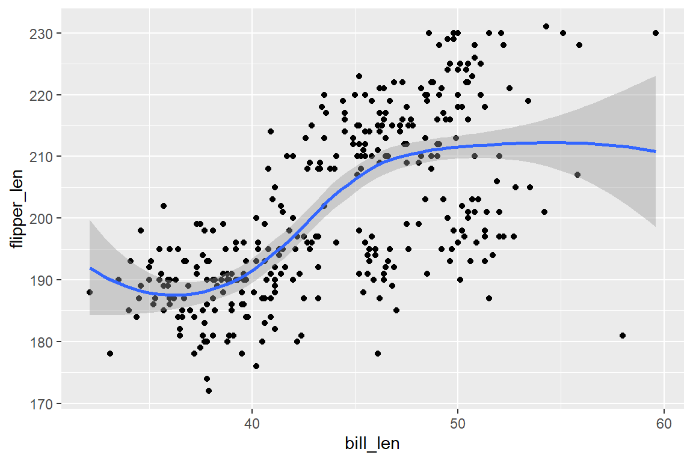
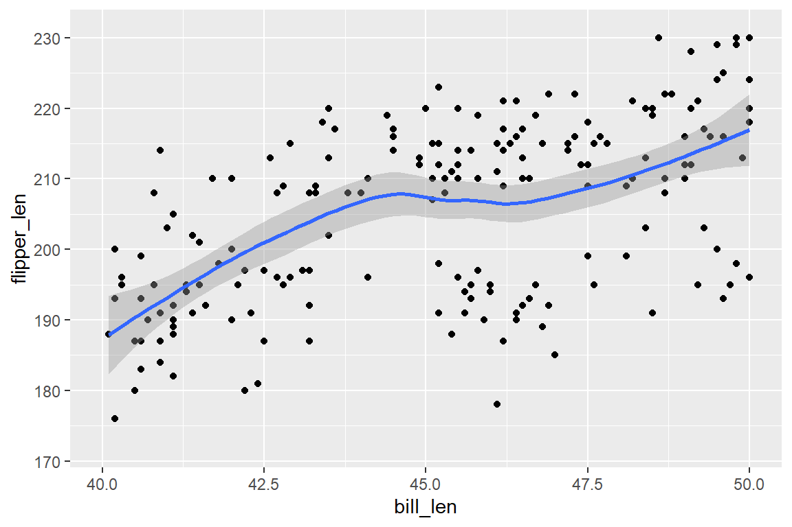
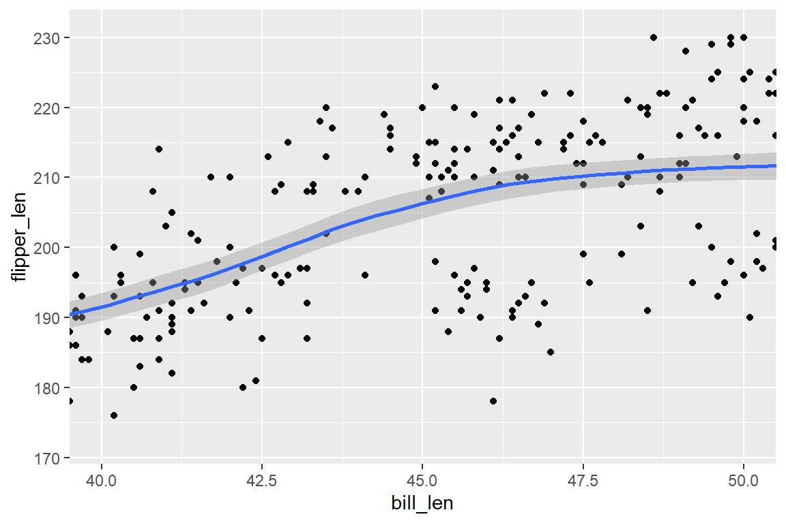
6.9 Facets-Layer
Der Facets-Layer ermöglicht es, einen Datensatz anhand einer oder mehrerer kategorialer Variablen in Teilmengen aufzuteilen und für jede Teilmenge eine eigene Grafik (Facet) zu erstellen. Auf diese Weise können wir Gruppen einfach vergleichen, ohne den Plot mit Farben oder Formen überladen zu müssen.
6.9.1 facet_wrap()
facet_wrap() erstellt eine Reihe von Grafiken für jede Ausprägung einer kategorialen Variable. Dabei werden die Grafiken zeilenweise angeordnet. Die Syntax folgt dem Schema facet_wrap(~ variable). Die wichtigsten Argumente von facet_wrap() sind:
-
nrow = .../ncol = ...: Anzahl der Zeilen bzw. Spalten im Facetten-Raster. -
scales = ...: Ob Achsen über Facetten hinweg fest ("fixed", Default) oder frei ("free","free_x","free_y") skaliert werden sollen. Freie Skalen sind nützlich, wenn Gruppen sehr unterschiedliche Wertebereiche haben, erschweren aber den direkten Vergleich. -
labeller = ...: Steuert die Beschriftung der Facetten-Titel. Mitlabeller = label_bothwird z.B. sowohl Variablenname als auch Wert angezeigt.
Möchten wir den Zusammenhang von Schnabel- und Flügellänge separat für jede Spezies darstellen:
# Links
ggplot(
data = penguins,
mapping = aes(x = bill_len, y = flipper_len, color = species)
) +
geom_point(alpha = 0.6) +
facet_wrap(~ species)
# Rechts
ggplot(
data = penguins,
mapping = aes(x = bill_len, y = flipper_len, color = species)
) +
geom_point(alpha = 0.6) +
facet_wrap(
~ species,
nrow = 2,
scales = "free_y",
labeller = label_both
)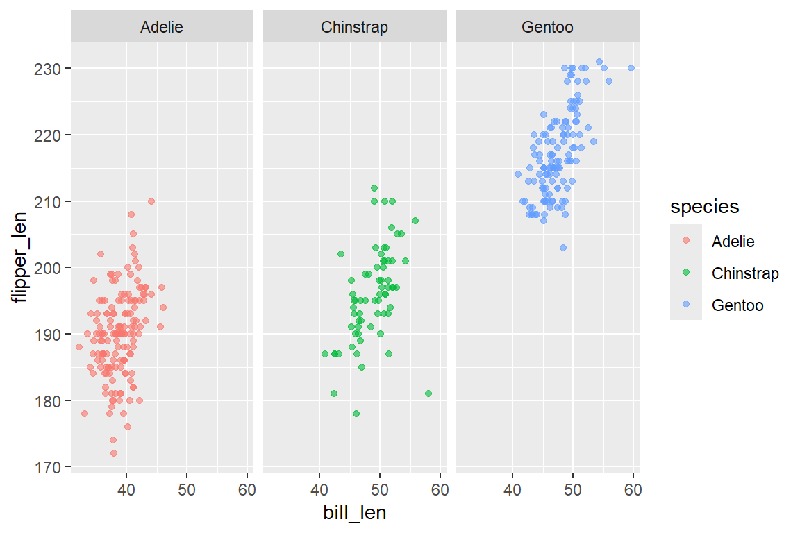
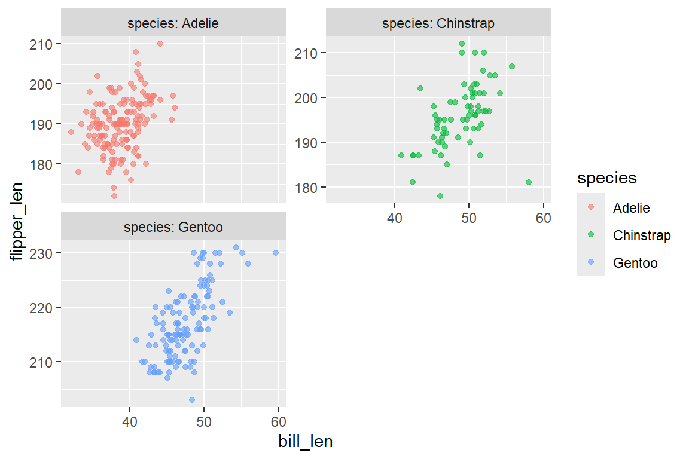
6.9.2 facet_grid()
Während facet_wrap() eine einzelne Variable für die Aufteilung nutzt, erlaubt facet_grid() die gleichzeitige Aufteilung nach zwei Variablen – eine für die Zeilen, eine für die Spalten. Die Syntax lautet facet_grid(zeilen_variable ~ spalten_variable). Möchten wir etwa die Verteilung der Flügellänge nach Spezies (Zeilen) und Geschlecht (Spalten) aufteilen:
ggplot(
data = penguins |> filter(!is.na(sex)),
mapping = aes(x = flipper_len, fill = species)
) +
geom_boxplot() +
facet_grid(species ~ sex)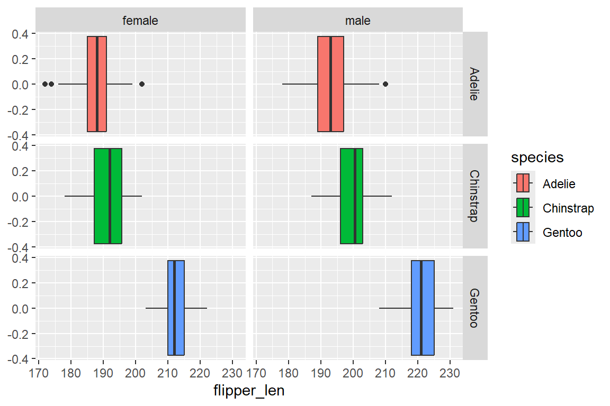
6.10 Theme-Layer
Der Theme-Layer steuert das gesamte visuelle Erscheinungsbild einer Grafik: Beschriftungen, Schriftarten, Hintergrundfarben, Gitterlinien, Legenden-Position und vieles mehr. Hier nehmen wir die letzten Anpassungen vor, um unsere Grafik für Präsentationen, Abschlussarbeiten oder Berichte aufzubereiten. In diesem Abschnitt gehen wir nur auf die wichtigsten Optionen ein. Für weitere Informationen siehe ggplot2: Elegant Graphics for Data Analysis oder die ggplot-Dokumentation. Änderungen im Theme-Layer können in der Funktion theme(...) vorgenommen werden, wobei für manchen Optionen (etwa Beschriftungen) eigene Funktionen bestehen.
6.10.1 Beschriftungen und Titel
Die einfachste Möglichkeit, sämtliche Beschriftungen und Titel können in ggplot gesammelt vorzunehmen, bietet jedoch die Funktion labs(). Neben x, y, title, subtitle und caption können auch Legenden-Titel für weitere Ästhetiken direkt übergeben werden – z. B. fill = "Geschlecht", size = "Körpergewicht". Das ist meistens einfacher und übersichtlicher als die name = ...-Argumente in den einzelnen scale_*-Funktionen zu setzen.
Wir können etwa unser Streudiagramm zum Zusammenhang von Schnabel- und Flügellänge eingefärbt nach Spezies einen Titel und Untertitel verpassen, die Achsen und Legenden beschriften und in der Caption auf die Datenquelle verweisen:
ggplot(
data = penguins,
mapping = aes(x = bill_len, y = flipper_len, color = species)
) +
geom_point() +
labs(
title = "Zusammenhang von Schnabel- und Flügellänge",
subtitle = "Palmer Penguins Datensatz",
caption = "Daten: Horst, Hill & Gorman (2020)",
x = "Schnabellänge (mm)",
y = "Flügellänge (mm)",
color = "Spezies"
)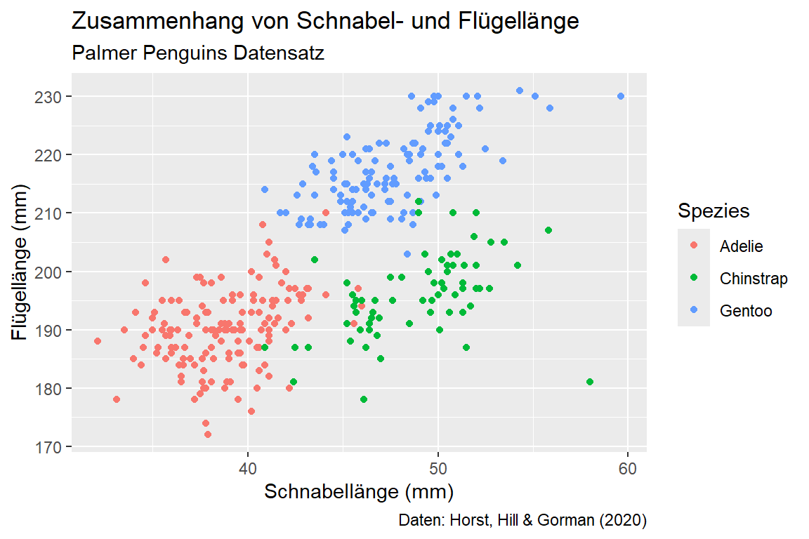
Zusätzlich zum Beschriftungstext können wir in theme() auch das Aussehen der Beschriftungen verändern. Dies läuft immer nach dem Code-Schema theme(<BESCHRIFTUNGSTYP> = element_text(...)) ab. Für die einzelnen Bezeichnungen der jeweiligen Beschrifungstypen (Titel, Caption, Achsentitel, Achsenlabels, etc.) siehe die R-Dokumentation zu theme().
Die wichtigsten Argumente innerhalb von element_text() sind dabei:
-
size = ...: Definiert die Schriftgröße (in pt). -
face = ...: Definiert den Schriftstil. Mögliche Optionen sindplain,bold,italicundbold.italic. -
family = ...: Definiert die Schriftart (sans,serif,mono). Zusätzliche Schriftarten können über Packages installiert werden (siehe systemfonts-Dokumentation für mehr Informationen). -
color = ...: Ändert Textfarbe. Akzeptiert werden Hex-Codes und R-Farbnamen. -
hjust = ...undvjust = ...: Ändert horizontale/vertikale Ausrichtung des Textankers. Aktzeptieren Zahlenwerte zwischen 0 und 1. -
angle = ...: Ändert Winkel der Beschriftung relativ zum Textanker. Akzeptiert Zahlenwerte zwischen 0 und 360.
Um etwa in Abbildung 6.22 den Titel fett und kursiv zu schreiben, den Untertitel zu verkleinern, die Caption nach links zu verschieben, die Schrifart der Beschriftung der y-Achse zu ändern und die x-Achsen-Break-Labels zu rotieren:
ggplot(
data = penguins,
mapping = aes(x = bill_len, y = flipper_len, color = species)
) +
geom_point() +
labs(
title = "Zusammenhang von Schnabel- und Flügellänge",
subtitle = "Palmer Penguins Datensatz",
caption = "Daten: Horst, Hill & Gorman (2020)",
x = "Schnabellänge (mm)",
y = "Flügellänge (mm)",
color = "Spezies"
) +
theme(
plot.title = element_text(face = "bold.italic"),
plot.subtitle = element_text(size = 7),
plot.caption = element_text(hjust = 0),
axis.title.y = element_text(family = "serif"),
axis.text.x = element_text(angle = 45, hjust = 1)
)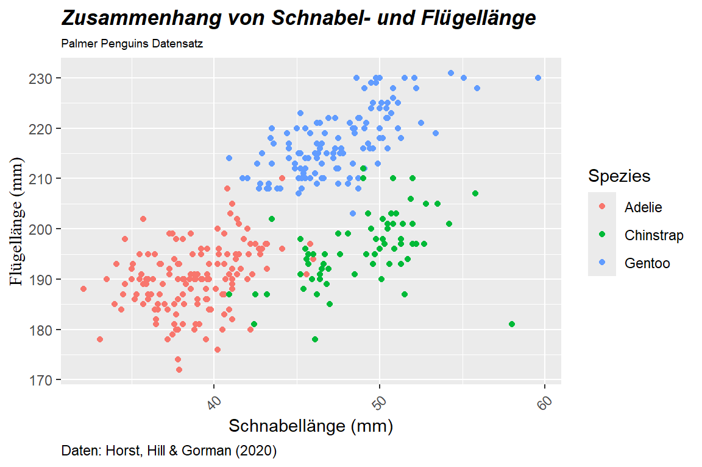
6.10.2 Legenden
Die Legende wird in ggplot standardmäßig automatisch generiert. In Kapitel 6.7 haben wir bereits gelernt, wie wir den Legendentitel und die Legendenlabels anpassen können. Die theme()-Funktion bietet noch weitere Möglichkeiten zur Adaption, die auch noch weitere Argumente zur Adaptierung der Legende beinhaltet. Die relevantesten sind dabei:
- Positon der Legende:
legend.position = ...legt fest, wo die Legende angezeigt wird. Mögliche Optionen sindleft,right,bottom,top,insideundnone. Die Feinadjustierung ist über das Argumentlegend.justification = ...möglich (siehe ggplot-Dokumentation). - Text-Position: Mit
legend.title.position = ...legen wir die Position des Legendentitels relativ zum Rest der Legende fest. Die Position der Labels relativ zum Legendenschlüssel kann mitlegend.text.position = ...definiert werden. - Text-Ästhetik: Mit
legend.title = element_text(...)undlegend.text = element_text(...)können wir das Aussehen des Legendentitels und der -labels bearbeiten.
ggplot(
data = penguins,
mapping = aes(x = bill_len, y = flipper_len, color = species)
) +
geom_point() +
scale_color_discrete(palette = "Dark2", labels = c("A", "C", "G")) +
labs(
x = "Schnabellänge (mm)",
y = "Flügellänge (mm)",
color = "Spezies"
) +
theme(
legend.position = "bottom",
legend.title = element_text(
size = 12,
face = "bold.italic",
hjust = 0.5
),
legend.title.position = "top",
legend.text.position = "left"
)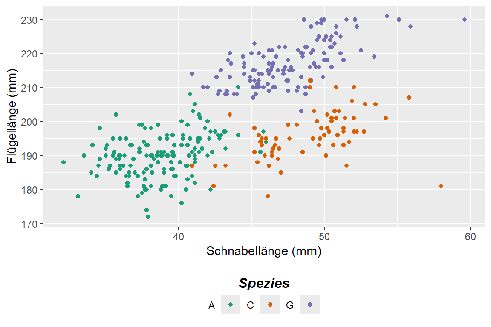
Für Informationen zu weiteren Legenden-Argumenten in theme() siehe ggplot2: Elegant Graphics for Data Analysis, die ggplot-Dokumentation, oder die Help-Seite in R.
HinweisAdaption des Legendenschlüssels mit
guides()
Das Key-Symbol in der Legende spiegelt immer das verwendete Geom wider - geom_point() zeigt einen Punkt, geom_line() eine Linie, etc. Aus ästhetischen Gründen können jedoch einheitliche Legendenschlüssel wünschenswert sein. Die Legendenschlüssel können wir in ggplot mit guides(<aes_typ> = guide_legend(override.aes = list(...))) anpassen. Möchten wir etwa in allen Legenden als Symbol bei Farben immer ein ausgefülltes Rechteck (shape = 15) der Größe 5 (size = 5) haben:
ggplot(
data = penguins,
mapping = aes(x = bill_len, y = flipper_len, color = species)
) +
geom_point() +
guides(
color = guide_legend(
override.aes = list(shape = 15, size = 5)
)
)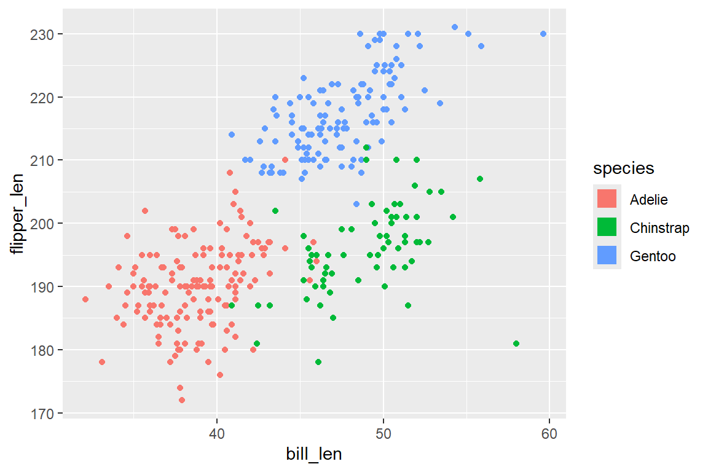
6.10.3 Vordefinierte Themes
In ggplot stehen mehrere vordefinierte Themes zur Verfügung, die das Gesamterscheinungsbild der Grafik mit einem Funktionsaufruf verändern. Diese sind:
-
theme_gray(): Das Standard-Theme mit grauem Hintergrund und weißen Gitterlinien. -
theme_bw(): Weißer Hintergrund mit schwarzem Rahmen und grauen Gitterlinien – gut für Druckerzeugnisse. -
theme_linedraw(): Weißer Hintergrund mit schwarzen Rahmenlinien und Gitterlinien – ähnlich wietheme_bw(), aber mit durchgehend schwarzen, dünneren Linien. -
theme_minimal(): Sehr aufgeräumtes Theme ohne Rahmen, nur graue Gitterlinien. -
theme_classic(): Klassisches Aussehen ohne Gitterlinien, mit x- und y-Achsenlinien. -
theme_void(): Völlig leeres Theme, nur die Geoms werden angezeigt. Nützlich z. B. für Karten. -
theme_light(): Heller Hintergrund mit feinen grauen Linien. -
theme_dark(): Dunkle Version vontheme_light()
p <- ggplot(
data = penguins,
mapping = aes(x = bill_len, y = flipper_len)
) +
geom_point()
p + theme_gray()
p + theme_bw()
p + theme_linedraw()
p + theme_minimal()
p + theme_classic()
p + theme_void()
p + theme_light()
p + theme_dark()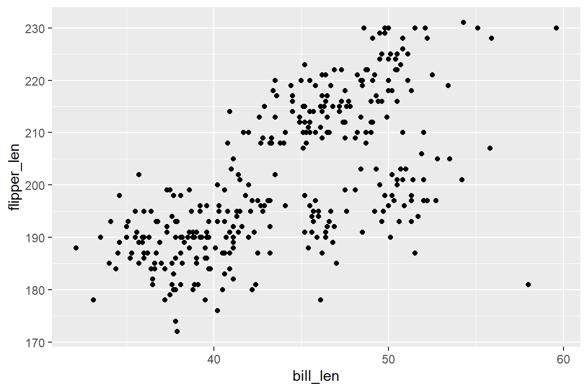
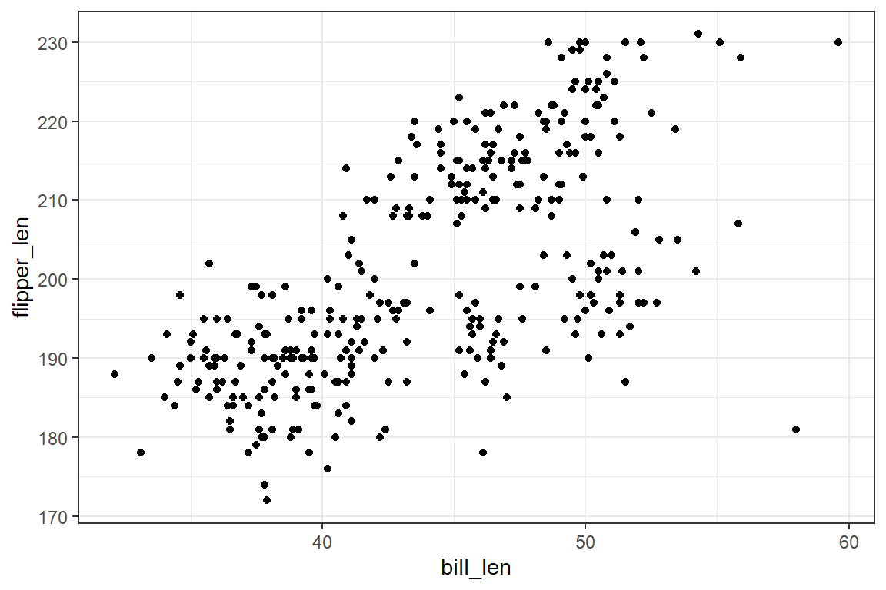
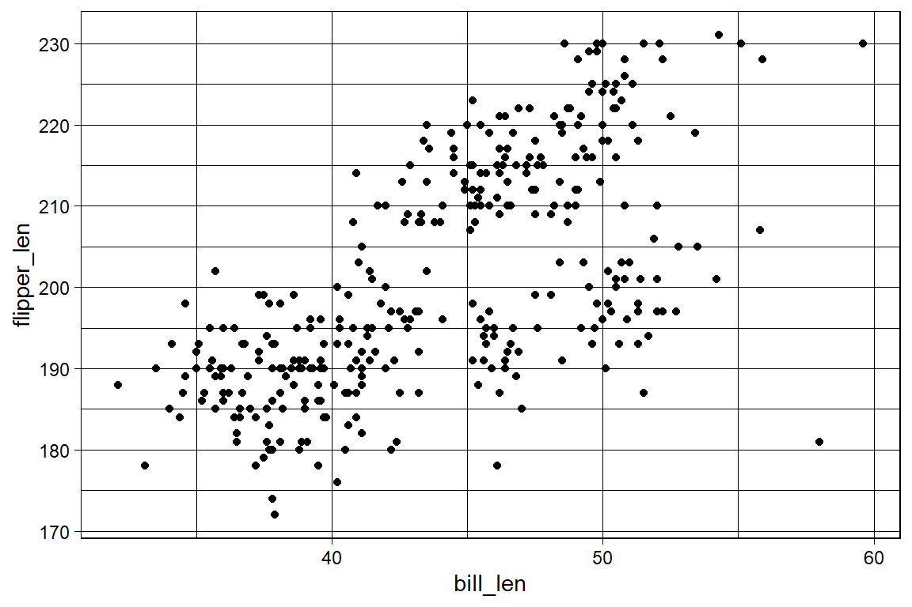
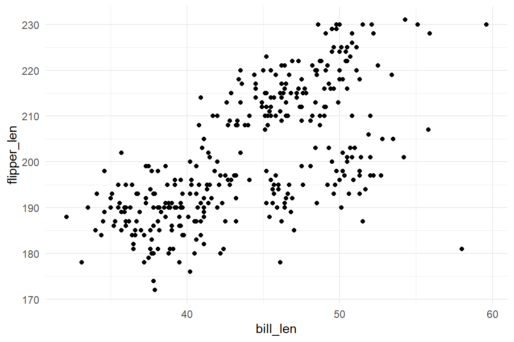
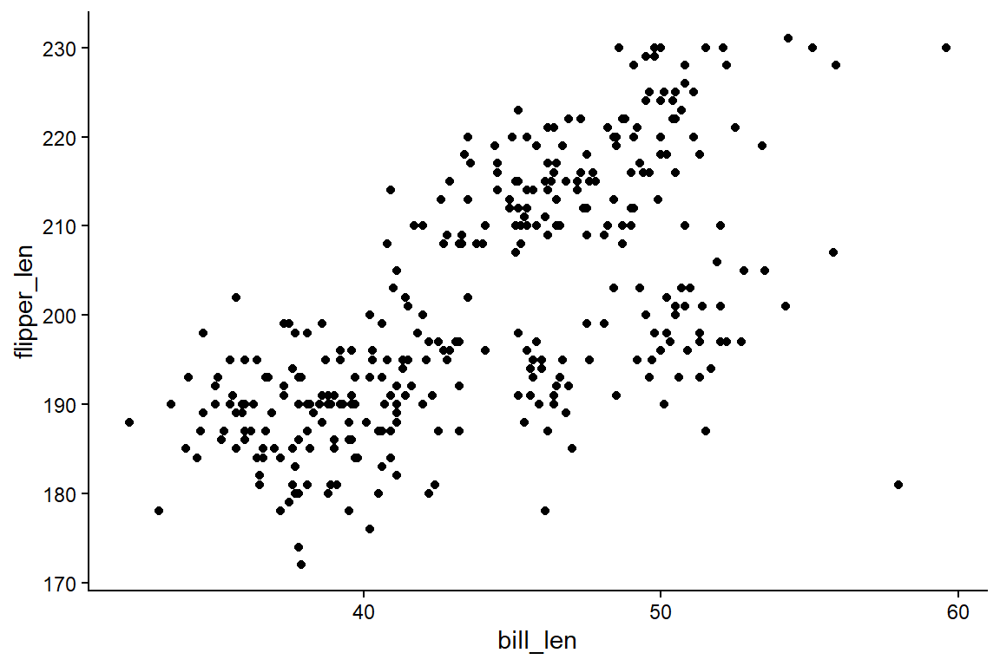
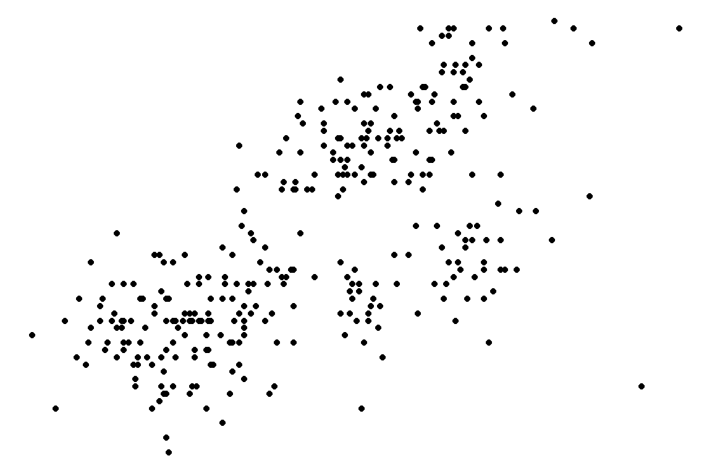
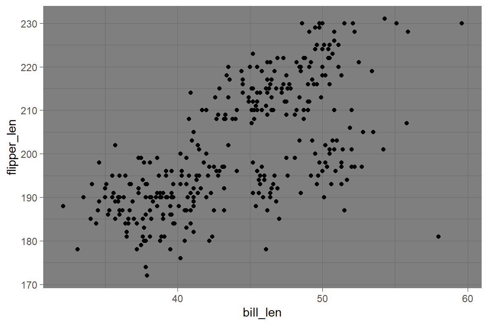
6.11 Weitere Themen
6.11.1 ggplot mit esquisse
Für Anfänger:innen kann das Erstellen von Grafiken in R fordernd sein. Tools wie esquisse können den Einstieg in ggplot2 erleichtern, indem sie eine interaktive Oberfläche zur Erstellung von Grafiken bieten. Statt Code direkt zu schreiben, lassen sich Variablen per Drag-and-Drop zuordnen und Visualisierungen intuitiv zusammenstellen, während der entsprechende ggplot2-Code automatisch generiert wird. Das ist besonders hilfreich, um schnell erste Plots zu erstellen oder ein besseres Verständnis für die Struktur von ggplot2 zu entwickeln. Nach Installation des esquisse Packages kann über die Addins in RStudio auf dieses Tool zugegriffen werden. Mehr Informationen zu esquisse bietet die Online-Dokumentation
6.11.2 Karten in ggplot
Mit ggplot können wir auch Karten visualisieren. Dafür benötigen wir passende Geo-Daten, die wir dann mit weiteren Informationen verknüpfen können. Für eine ausführliche Einführung mit Geo-Daten in R sowie die Erstellung von Karten mit ggplot, siehe Geocomputation with R und Kapitel 6 in ggplot2: Elegant Graphics for Data Analysis.
Um die wesentlichen Aspekte der Kartengestaltung in ggplot kurz zu skizzieren, erstellen wir eine Karte mit dem BIP/Kopf in den deutschen Bundesländern. Dafür benötigen wir zuerst Geo-Daten zu Deutschland. Geo-Daten können aus unterschiedlichsten Packages oder Open-Data-Resourcen importiert werden. Für unser Beispiel greifen wir auf das giscoR-Package zurück. Mit der Funktion gisco_get_nuts() laden wir Geo-Daten auf Bundesland-Ebene (NUTS1) für Deutschland herunter. Das Ergebnis ist ein sf-Objekt (Simple Features), das neben den üblichen Datenspalten eine geometry-Spalte mit den geografischen Polygonen der Bundesländer enthält:
library(giscoR)
de_geo <- gisco_get_nuts(
country = "Germany",
nuts_level = 1
) |>
janitor::clean_names() |>
select(nuts_id, nuts_name, geometry)
de_geo
#> Simple feature collection with 16 features and 2 fields
#> Geometry type: MULTIPOLYGON
#> Dimension: XY
#> Bounding box: xmin: 5.877056 ymin: 47.27011 xmax: 15.02257 ymax: 54.97703
#> Geodetic CRS: WGS 84
#> # A tibble: 16 × 3
#> nuts_id nuts_name geometry
#> <chr> <chr> <MULTIPOLYGON [°]>
#> 1 DE1 Baden-Württemberg (((9.644791 49.72136, 9.648736 49.79148, 9.47149…
#> 2 DE2 Bayern (((10.45053 50.40186, 10.20104 50.54966, 10.0413…
#> 3 DE3 Berlin (((13.61083 52.54424, 13.39854 52.64819, 13.1642…
#> 4 DE4 Brandenburg (((13.71007 53.47906, 13.41367 53.27002, 13.2414…
#> 5 DE5 Bremen (((8.485331 53.22712, 8.654899 53.10886, 8.71142…
#> 6 DE6 Hamburg (((10.23668 53.49635, 10.16474 53.54803, 10.1931…
#> # ℹ 10 more rowsIm zweiten Schritt laden wir mit Hilfe des Packages eurostat das BIP pro Kopf (in Euro) für das Jahr 2024 aus der Eurostat-Datenbank und filtern auf die NUTS-1-Regionen der deutschen Bundesländer. Anschließend fügen wir die Wirtschaftsdaten über left_join() mit den Geodaten zusammen — analog zu den Joins aus Kapitel 3:
library(eurostat)
de_income <- get_eurostat("nama_10r_3gdp", time_format = "num") |>
janitor::clean_names() |>
filter(
geo %in% de_geo$nuts_id,
time_period == 2024,
unit == "EUR_HAB"
) |>
select(geo, values) |>
rename(nuts_id = geo, bip_pro_kopf = values)
#>
indexed 0B in 0s, 0B/s
indexed 2.15GB in 0s, 2.15GB/s
de_geo <- left_join(de_geo, de_income)Den zusammengeführten Datensatz können wir nun visualisieren. geom_sf() erkennt die geometry-Spalte automatisch und zeichnet die Bundesländer als Polygone. Die Einfärbung nach bip_pro_kopf erfolgt über eine kontinuierliche Farbskala, die wir mit scale_fill_continuous() anpassen. Da bei Karten Achsen und Hintergrund störend wirken, verwenden wir theme_void():
library(sf)
ggplot(data = de_geo,
aes(fill = bip_pro_kopf)) +
geom_sf(color = "black") +
scale_fill_continuous(
name = NULL,
breaks = c(40000, 60000, 80000),
labels = c("40.000€", "60.000€", "80.000€"),
palette = "YlGn",
) +
labs(
title = "BIP/Kopf nach Bundesland",
subtitle = "Eurostat-Daten, 2024"
) +
theme_void() +
theme(legend.position = "bottom") +
guides(
fill = guide_colorbar(barwidth = unit(10, "lines"))
)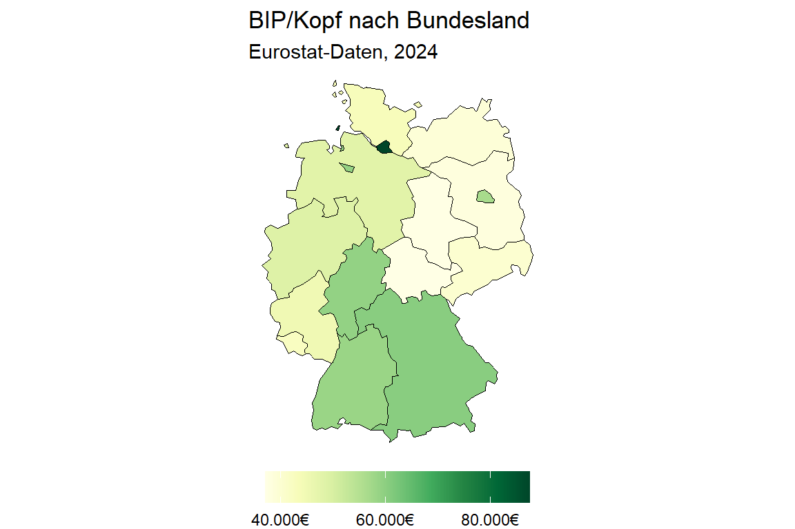
6.11.3 Annotationen in ggplot
Annotationen ermöglichen es, Grafiken mit zusätzlichen Texten, Linien oder Hervorhebungen zu versehen, um wichtige Punkte oder Bereiche direkt in der Grafik zu kommentieren. Die wichtigsten Funktionen sind:
-
annotate(): Fügt einzelne Texte, Pfeile, Rechtecke oder andere Geoms an einer fixen Position hinzu, ohne auf den zugrundeliegenden Datensatz zurückzugreifen. -
geom_text()undgeom_label(): Beschriften Datenpunkte direkt auf Basis einer Textvariable im Datensatz. Das Packageggrepelerweitert dies um eine automatische Kollisionsvermeidung der Labels mit den Funktionengeom_text_repel()undgeom_label_repel().
Für eine ausführliche Behandlung von Annotationen in ggplot siehe Kapitel 8 in ggplot2: Elegant Graphics for Data Analysis. Abbildung 6.28 zeigt ein Beispiel für die Verwendung von Labels mit ggrepel in ggplot:
library(ggrepel)
penguins |>
mutate(
label = case_when(
bill_len > 55 & flipper_len < 185 ~ "Ausreißer",
)
) |>
ggplot(aes(x = bill_len, y = flipper_len)) +
geom_point(aes(color = species), alpha = 0.6) +
geom_label_repel(
aes(label = label)
)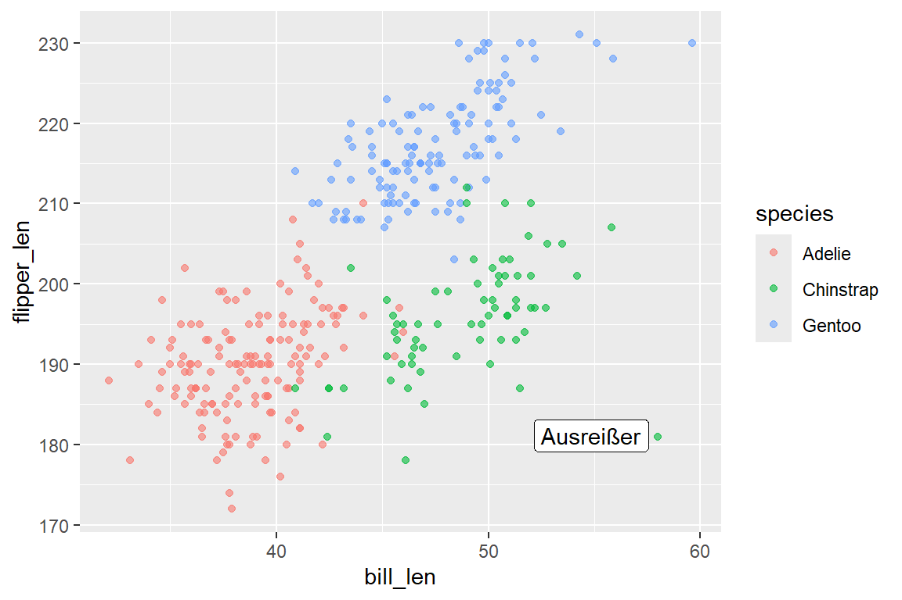
6.11.4 Interaktive Grafiken
ggplot-Grafiken können mit dem Package plotly einfach in interaktive Grafiken umgewandelt werden. Die Funktion ggplotly() nimmt dabei ein bestehendes ggplot-Objekt entgegen und erzeugt daraus eine interaktive HTML-Grafik mit Zoom, Pan und Tooltip-Funktionalität:
Für mehr Details zur Arbeit mit ggplotly() und der Erstellung von nativen Plotly-Plots mit plot_ly() (ohne den ggplot-Zwischenschritt) siehe die weiterführenden Informationen in R Graph Gallery Für komplexere interaktive Visualisierungen, etwa Dashboards oder reaktive Grafiken, bietet sich das Package shiny an. Eine Einführung in shiny findest sich im Mastering Shiny-Buch.